Pipette Operation Guide
Pipette 操作指南
This document explains how to use the Pipette desktop application.
本文档说明了如何使用 Pipette 桌面应用程序。
Screenshots were taken using a GPK60-63R keyboard unless otherwise noted.
除非另有说明，截图均使用 GPK60-63R 键盘拍摄。
Table of Contents / 目录
1. Device Connection / 设备连接
1.1 Device Selection Screen / 设备选择屏幕
1.2 Connecting a Keyboard / 连接键盘
1.3 Data / 数据
2. Keymap Editor / 键位编辑器
2.1 Screen Layout / 屏幕布局
2.2 Changing Keys / 更改按键
2.3 Layer Switching / 层切换
2.4 Key Popover / 按键弹出层
2.5 Layout Options / 布局选项
3. Keycode Palette / 键码调色板
3.1 Basic / 基础
3.2 Layers / 层
3.3 Modifiers / 修饰键
3.4 System / 系统
3.5 Lighting / 灯效
3.6 Tap-Hold / Tap Dance / 点按-长按 / 点按跳舞
3.7 Macro / 宏
3.8 Combo / 组合键
3.9 Key Override / 按键覆盖
3.10 Alt Repeat Key / Alt 重复键
3.11 Behavior / 行为
3.12 User / 用户
3.13 Keyboard (Device Picker) / 键盘（设备选择器）
3.14 Keycodes Overlay Panel / 键码覆盖面板
4. Toolbar / 工具栏
4.1 Zoom / 缩放
4.2 Undo / Redo / 撤销 / 重做
4.3 Typing Test / 打字测试
5. Detail Setting Editors / 详细设置编辑器
5.1 Lighting Settings / 灯效设置
5.2 Combo / 组合键
5.3 Key Override / 按键覆盖
5.4 Alt Repeat Key / Alt 重复键
5.5 Favorites / 收藏夹
5.6 JSON Editor / JSON 编辑器
6. Editor Settings Panel / 编辑器设置面板
6.1 Cloud Sync / 云同步
7. Pipette Hub / Pipette Hub
8. Status Bar / 状态栏
1. Device Connection
1. 设备连接
1.1 Device Selection Screen
1.1 设备选择屏幕
When you launch the app, a list of connected Vial-compatible keyboards is displayed.
当您启动应用程序时，将显示已连接的兼容 Vial 的键盘列表。
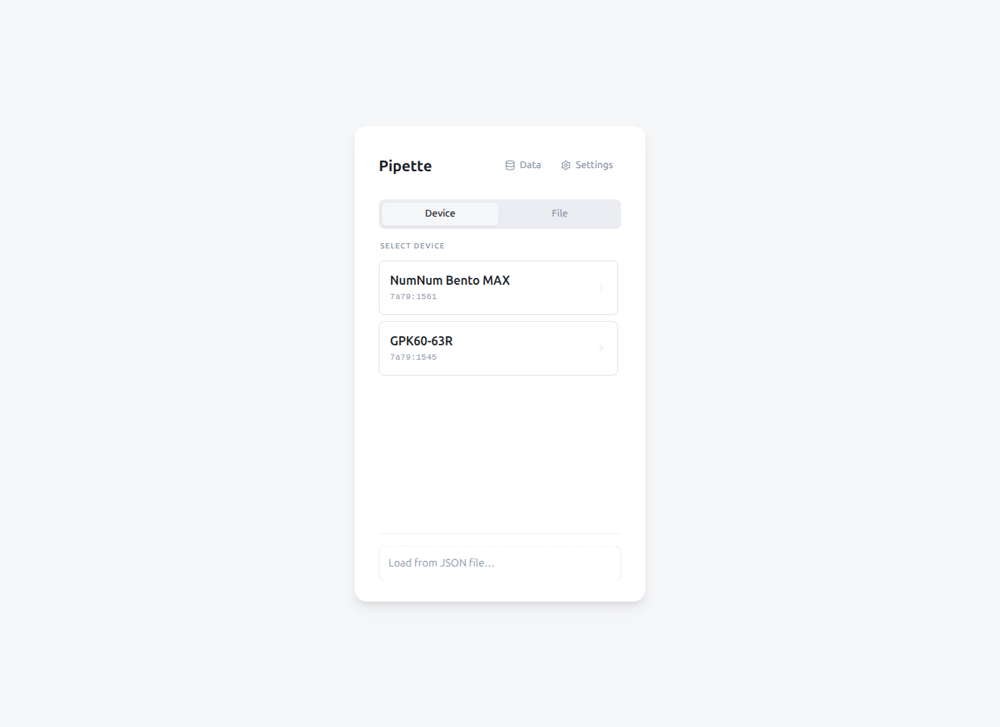
- USB-connected keyboards are automatically detected
- USB 连接的键盘会被自动检测
- If multiple keyboards are connected, select one from the list
- 如果连接了多个键盘，请从列表中选择一个
- On Linux, udev rules may need to be configured if no devices are found
- 在 Linux 上，如果找不到设备，可能需要配置 udev 规则
File Tab 文件选项卡
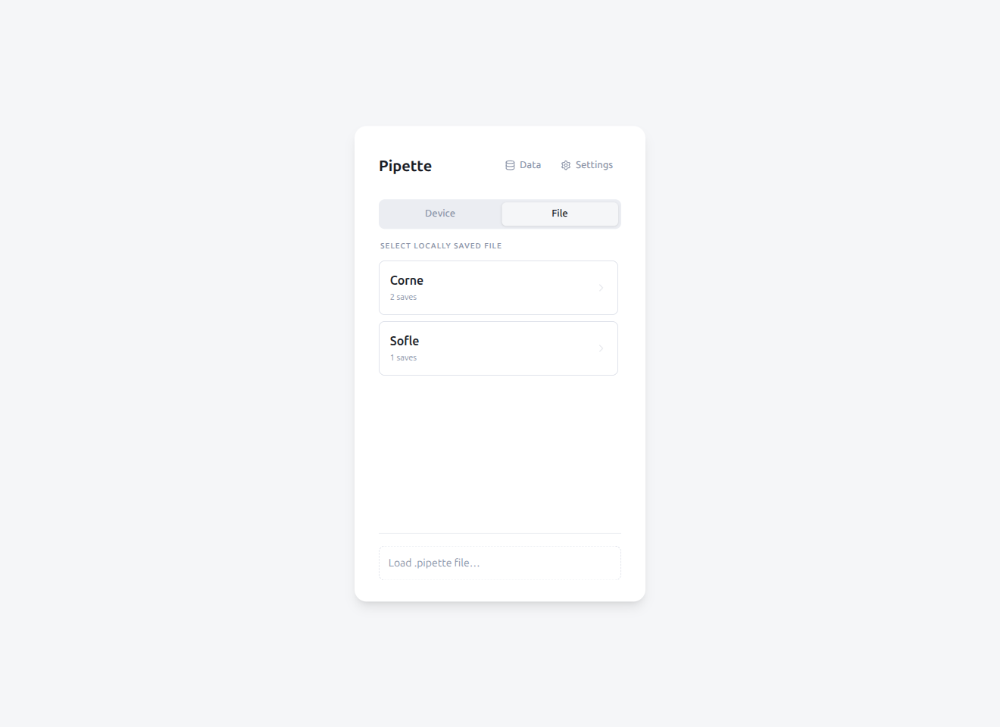
The File tab allows offline editing of .pipette files without a physical keyboard connected:
“文件”选项卡允许在未连接物理键盘的情况下脱机编辑 .pipette 文件：
- Browse previously saved keyboards and select an entry to load
- 浏览以前保存的键盘并选择要加载的条目
- Load an external
.pipettefile from disk - 从磁盘加载外部
.pipette文件 - A virtual keyboard is created from the embedded definition in the file
- 根据文件中嵌入的定义创建一个虚拟键盘
- An unsaved changes indicator is shown when edits have not been saved
- 未保存更改时，会显示未保存更改指示器
Use case: You want to tweak your keyboard's keymap, but the keyboard isn't with you right now. If you've previously saved its data, you can load it from the File tab, make your edits offline, and later connect the keyboard and load the modified data to apply your changes.
使用场景： 您想调整键盘的键位图，但键盘现在不在身边。如果您以前保存过其数据，则可以从“文件”选项卡加载它，进行脱机编辑，稍后连接键盘并加载修改后的数据以应用更改。
Feature Availability: Device vs File Mode 功能可用性：设备模式 vs 文件模式
| Feature 功能 |
Device (USB) 设备 (USB) |
File (.pipette) 文件 (.pipette) |
|---|---|---|
| Keymap editing 键位编辑 |
Yes 是 |
Yes 是 |
| Macro / Tap Dance editing 宏 / 点按跳舞编辑 |
Yes 是 |
Yes 是 |
| Combo / Key Override / Alt Repeat Key 组合键 / 按键覆盖 / Alt重复键 |
Yes 是 |
Yes 是 |
| QMK Settings QMK 设置 |
Yes (device) 是（设备） |
Yes (local data) 是（本地数据） |
| Typing Test 打字测试 |
Yes 是 |
Yes 是 |
| Export (.vil / .c / .pdf) 导出 |
Yes 是 |
Yes 是 |
| Lighting control 灯效控制 |
Yes 是 |
No 否 |
| Matrix Tester 矩阵测试器 |
Yes 是 |
No 否 |
| Lock / Unlock 锁定 / 解锁 |
Yes 是 |
No 否 |
| Snapshot save / load 快照保存 / 加载 |
Yes 是 |
No 否 |
| Hub upload Hub 上传 |
Yes 是 |
No 否 |
| JSON sideload JSON 侧向加载 |
Yes 是 |
No 否 |
| Device probe (Keyboard tab) 设备探测（键盘选项卡） |
Yes 是 |
No 否 |
| Cloud Sync 云同步 |
Yes 是 |
No 否 |
1.2 Connecting a Keyboard
1.2 连接键盘
Click a keyboard name in the list to open the keymap editor. A connecting overlay shows loading progress while the keyboard data is read.
点击列表中的键盘名称以打开键位编辑器。在读取键盘数据时，会显示连接覆盖层以展示加载进度。
If Cloud Sync is configured, sync progress is also displayed during connection (favorites first, then keyboard-specific data).
如果配置了云同步，在连接期间也会显示同步进度（首先是收藏夹，然后是键盘特定数据）。
1.3 Data
1.3 数据
The Data button on the device selection screen opens the Data panel for centralized management of keyboards, favorites, sync data, and Hub posts.
设备选择屏幕上的“数据”按钮可打开数据面板，用于集中管理键盘、收藏夹、同步数据和 Hub 发布内容。
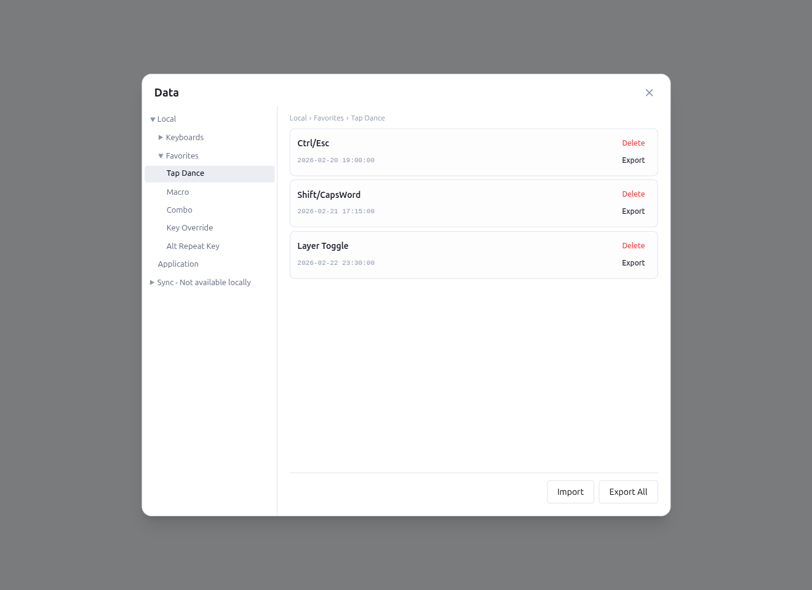
The left sidebar provides a tree navigation with the following structure:
左侧边栏提供具有以下结构的树状导航：
- Local
- 本地
- Keyboards: Browse saved keyboard snapshots. Click a keyboard to view, load, export, or delete entries
- 键盘：浏览保存的键盘快照。点击键盘以查看、加载、导出或删除条目
- Favorites: Tap Dance, Macro, Combo, Key Override, Alt Repeat Key — each type shows its saved entries with rename, delete, export, and Hub actions
- 收藏夹：点按跳舞、宏、组合键、按键覆盖、Alt 重复键 —— 每种类型都显示其保存的条目，并带有重命名、删除、导出和 Hub 操作
- Application: Import/export local data or reset selected targets (keyboard data, favorites, app settings)
- 应用程序：导入/导出本地数据或重置选定目标（键盘数据、收藏夹、应用程序设置）
- Sync (when Cloud Sync is configured): Shows remote-only data not available locally. Scan and delete orphaned sync data from Google Drive
- 同步（配置云同步时）：显示本地不可用的仅限远程的数据。扫描并删除 Google 云端硬盘中孤立的同步数据
- Hub (when Hub is connected): Manage Hub posts grouped by keyboard name
- Hub（连接 Hub 时）：管理按键盘名称分组的 Hub 发布内容
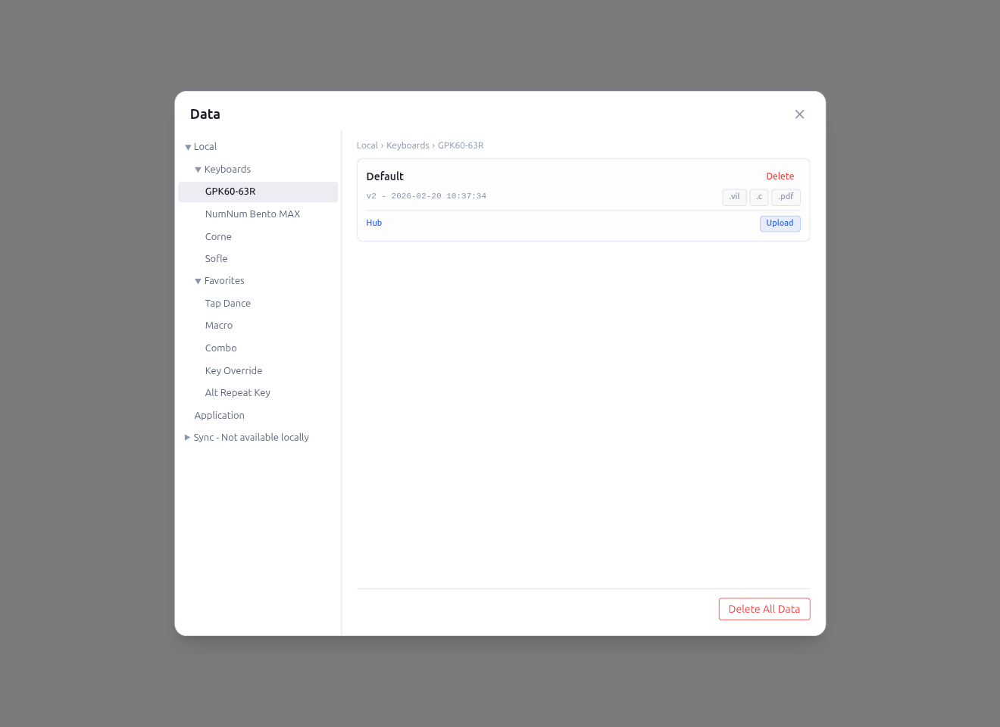
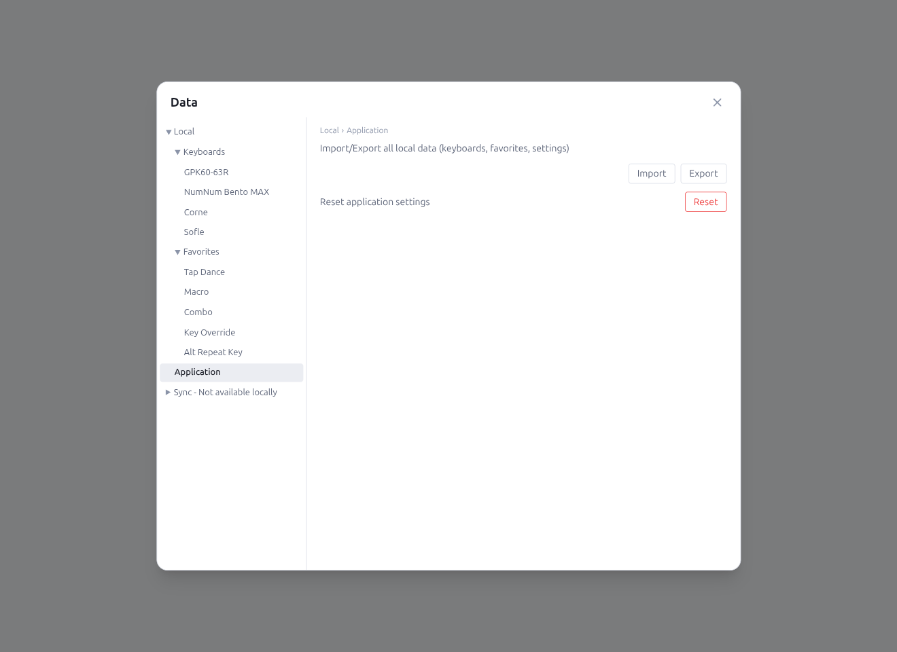
Per-entry actions in the favorites list:
收藏夹列表中的单项操作：
- Click to rename, delete, or Export individual entries
- 点击以重命名、删除或导出单个条目
- Hub actions: When Hub is connected, each entry shows Upload to Hub / Update on Hub / Remove from Hub buttons
- Hub 操作：连接 Hub 时，每个条目都会显示上传到 Hub / 在 Hub 上更新 / 从 Hub 移除按钮
- Import / Export All buttons at the footer for bulk operations
- 底部页脚有导入 / 全部导出按钮，用于批量操作
A breadcrumb navigation at the top of the content area shows the current path (e.g., "Local › Favorites › Tap Dance")
内容区域顶部的面包屑导航显示当前路径（例如，“本地 › 收藏夹 › 点按跳舞”）
2. Keymap Editor
2. 键位编辑器
2.1 Screen Layout
2.1 屏幕布局
The keymap editor consists of two main areas: the keyboard layout display and the keycode palette.
键位编辑器由两个主要区域组成：键盘布局显示区和键码调色板。

- Top area: Physical keyboard layout (shows the current keycode assigned to each key)
- 顶部区域：物理键盘布局（显示分配给每个按键的当前键码）
- Left side: Toolbar (zoom, undo/redo, etc.)
- 左侧：工具栏（缩放、撤销/重做等）
- Bottom area: Keycode palette (tabbed interface) with overlay panel toggle
- 底部区域：键码调色板（选项卡式界面），带有覆盖面板切换开关
- Right side (when open): Keycodes Overlay Panel (tools, save, layout options)
- 右侧（打开时）：键码覆盖面板（工具、保存、布局选项）
- Bottom bar: Status bar
- 底部栏：状态栏
2.2 Changing Keys
2.2 更改按键
- Click a key on the keyboard layout to select it
- 点击键盘布局上的按键以选中它
- Click a keycode from the keycode palette to assign it
- 点击键码调色板中的键码以进行分配
- The key display updates immediately
- 按键显示立即更新
- Changes are automatically sent to the keyboard
- 更改会自动发送到键盘
- Ctrl+click to select multiple keys
- Ctrl+点击可选择多个按键
- Shift+click for range selection
- Shift+点击可进行范围选择
- Press Escape to deselect all keys
- 按下 Escape 键取消选择所有按键
Instant Key Selection controls how keycode assignment behaves:
即时按键选择控制键码分配的行为：
- ON (default): A single click on a keycode immediately assigns it and closes the selection. Fast workflow for quick edits.
- 开启（默认）：单击键码会立即分配它并关闭选择。适用于快速编辑的流程。
- OFF: A single click selects a keycode (highlighted), double-click or press Enter to confirm and assign. A hint is shown at the bottom of the palette. Useful when you want to browse keycodes before committing.
- 关闭：单击会选中一个键码（高亮显示），双击或按 Enter 键确认并分配。调色板底部会显示提示。当您想在提交前浏览键码时非常有用。
This setting can be toggled per-keyboard in the Keycodes Overlay Panel (§3.14), and the global default can be set in Settings → Defaults (§6.1).
此设置可以在键码覆盖面板 (§3.14) 中针对每个键盘进行切换，全局默认值可以在“设置”→“默认值” (§6.1) 中设置。
2.3 Layer Switching
2.3 层切换
Layer switching buttons are located on the left side of the keyboard layout.
层切换按钮位于键盘布局的左侧。
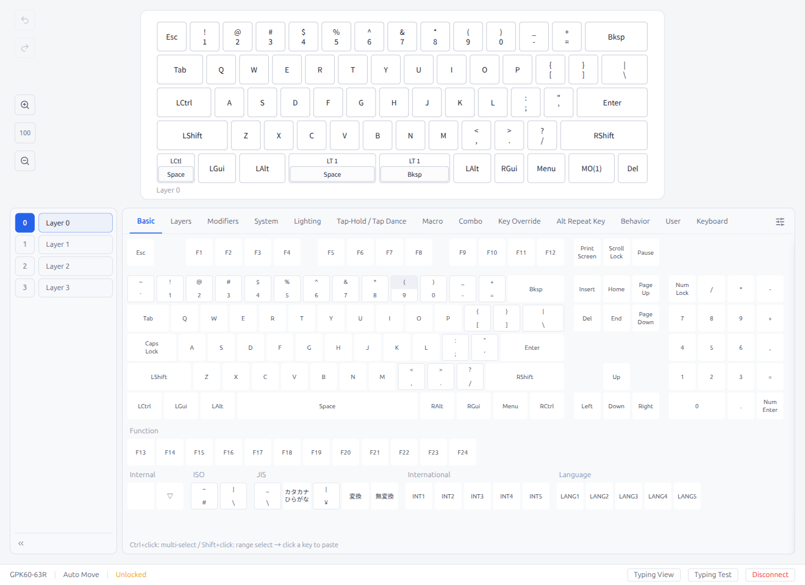
- Click layer number buttons to switch between layers
- 点击层数字按钮可在不同层之间切换
- Layer 0 is the default layer
- 层 0 是默认层
- The number of available layers depends on the keyboard configuration
- 可用层的数量取决于键盘配置
The layer panel can be collapsed to save space:
层面板可以折叠以节省空间：
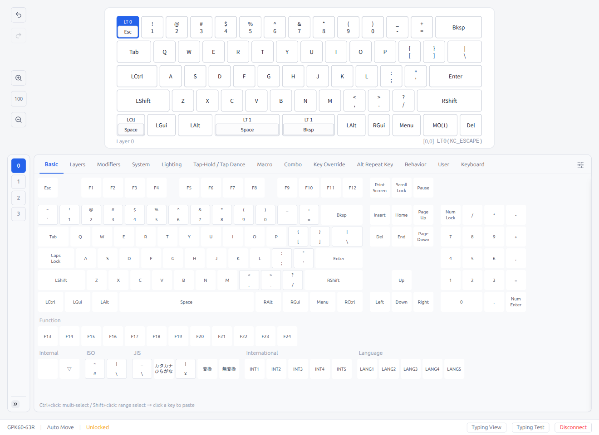
Click the collapse button (chevron) to minimize the layer panel to just numbers. Click the expand button to restore full layer names.
点击折叠按钮（人字形）将层面板最小化为仅数字。点击展开按钮以恢复完整的层名称。
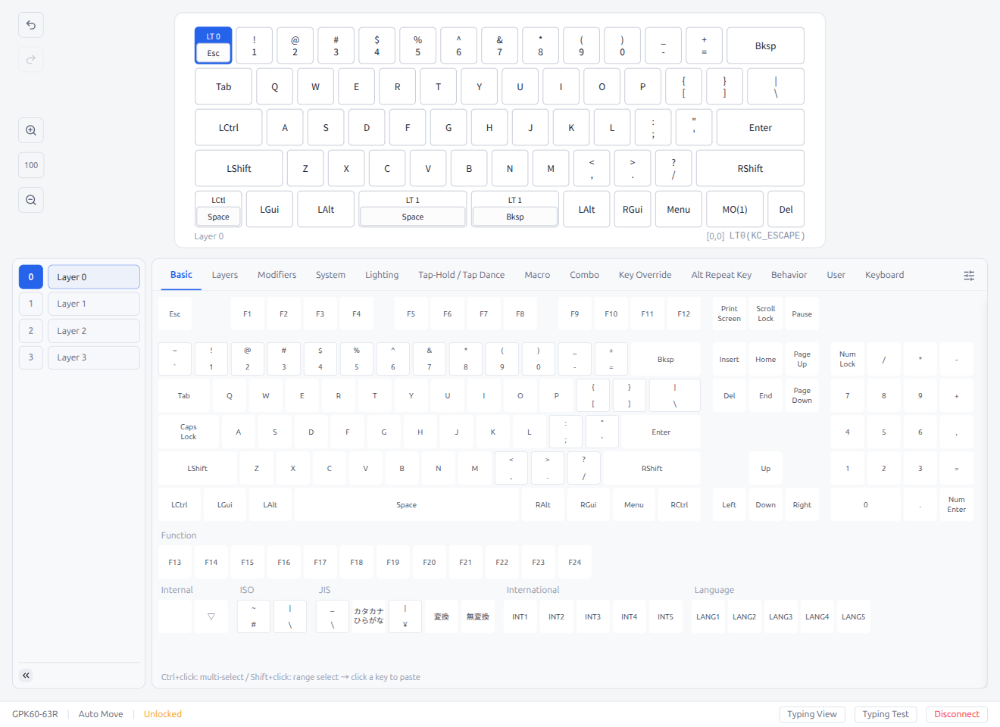
2.4 Key Popover
2.4 按键弹出层
Double-click a key on the keyboard layout to open the Key Popover — a quick way to search and assign keycodes without scrolling through the palette.
双击键盘布局上的按键以打开按键弹出层 —— 这是一种在不滚动调色板的情况下快速搜索和分配键码的方法。
Key Tab 按键选项卡
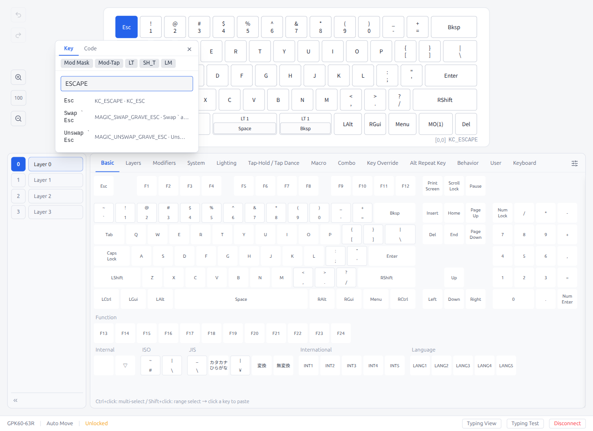
- The search input is pre-filled with the current keycode name
- 搜索输入框预填了当前的键码名称
- Type to search by name, keycode name, or alias — results are ranked by relevance
- 输入名称、键码名称或别名进行搜索 —— 结果按相关性排序
- Click a result to assign it immediately
- 点击结果即可立即分配
- The popover also appears when double-clicking key fields in detail editors (Tap Dance, Combo, Key Override, etc.)
- 在详细编辑器（点按跳舞、组合键、按键覆盖等）中双击按键字段时，也会出现弹出层。
Code Tab 代码选项卡
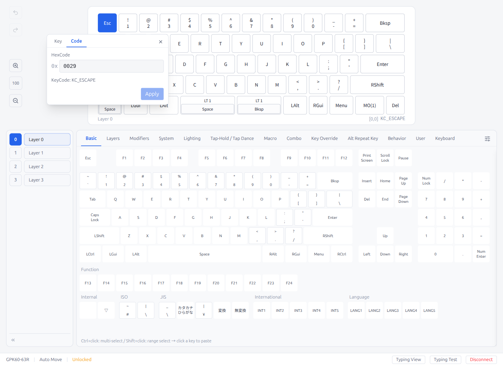
- Enter a keycode value directly in hexadecimal (e.g.,
0x0029for Escape) - 直接输入十六进制的键码值（例如，
0x0029代表 Escape） - The resolved keycode name is displayed below the hex input
- 解析后的键码名称显示在十六进制输入框下方
- Click Apply to assign the entered keycode
- 点击应用以分配输入的键码
Wrapper Modes 包装模式
The mode buttons at the top of the popover let you build composite keycodes:
弹出层顶部的模式按钮允许您构建复合键码：
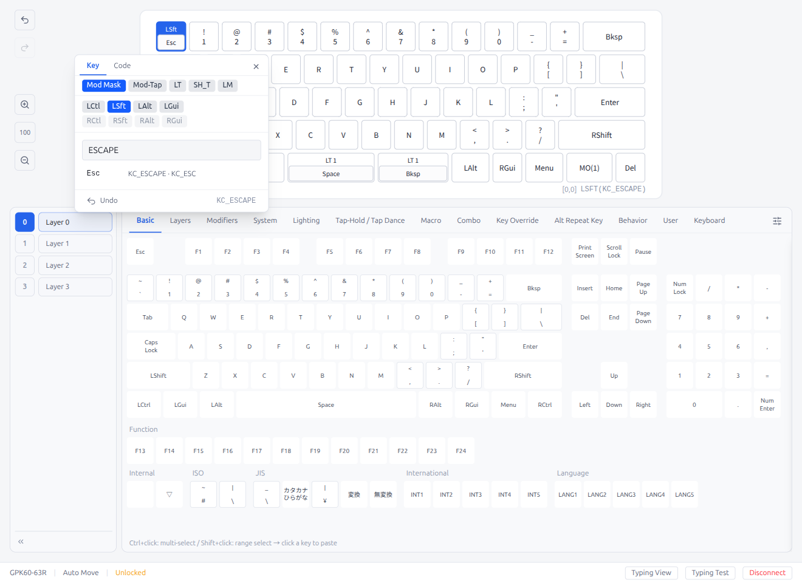
- Mod Mask: Combine a modifier with a key (e.g.,
LSFT(KC_ESCAPE)) - 修饰键掩码 (Mod Mask)：将修饰键与按键组合（例如，
LSFT(KC_ESCAPE)） - Mod-Tap: Modifier on hold, key on tap (e.g.,
LSFT_T(KC_ESCAPE)) - 修饰键点按 (Mod-Tap)：长按为修饰键，短按为普通键（例如，
LSFT_T(KC_ESCAPE)）
Both modes show the modifier checkbox strip to select Left/Right Ctrl, Shift, Alt, or GUI. Left and Right modifiers cannot be mixed — selecting one side disables the other.
两种模式都显示修饰键复选框条，用于选择左/右 Ctrl、Shift、Alt 或 GUI。左侧和右侧修饰键不能混合 —— 选择一侧会禁用另一侧。
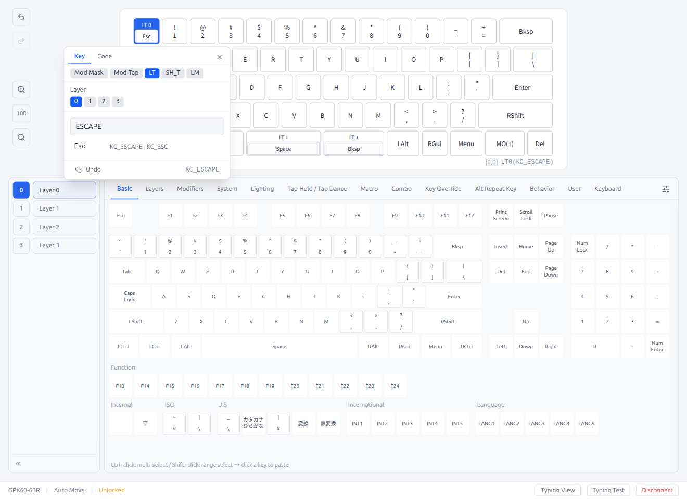
- LT: Layer-Tap — activate a layer on hold, send a key on tap (e.g.,
LT0(KC_ESCAPE)). A layer selector appears to choose the target layer. - LT：层点按 (Layer-Tap) —— 长按激活层，短按发送按键（例如，
LT0(KC_ESCAPE)）。会出现一个层选择器用于选择目标层。 - SH_T: Swap Hands Tap — swap hands on hold, send a key on tap (e.g.,
SH_T(KC_ESCAPE)) - SH_T：换手点按 (Swap Hands Tap) —— 长按切换换手模式，短按发送按键（例如，
SH_T(KC_ESCAPE)） - LM: Layer-Mod — activate a layer with modifiers (e.g.,
LM(0, MOD_LSFT)). Shows both the layer selector and the modifier checkbox strip. - LM：层修饰键 (Layer-Mod) —— 激活带有修饰键的层（例如，
LM(0, MOD_LSFT)）。同时显示层选择器和修饰键复选框条。
Click an active mode button to toggle it off and revert to a basic keycode.
点击已激活的模式按钮可将其关闭并恢复为基本键码。
Undo / Redo: The popover footer shows context-sensitive Undo and Redo buttons. Undo displays the previous keycode and reverts to it; Redo displays the next keycode and re-applies it. These buttons only appear when the most recent undo/redo history entry matches the key currently open in the popover (i.e., the last single change). For multi-step history navigation, use the toolbar buttons or keyboard shortcuts (see §4.2).
撤销 / 重做：弹出层底部显示上下文相关的撤销和重做按钮。撤销显示前一个键码并恢复；重做显示下一个键码并重新应用。这些按钮仅在最近的撤销/重做历史条目与弹出层中当前打开的按键匹配时（即最后一次单一更改）才会出现。对于多步骤历史导航，请使用工具栏按钮或键盘快捷键（见 §4.2）。
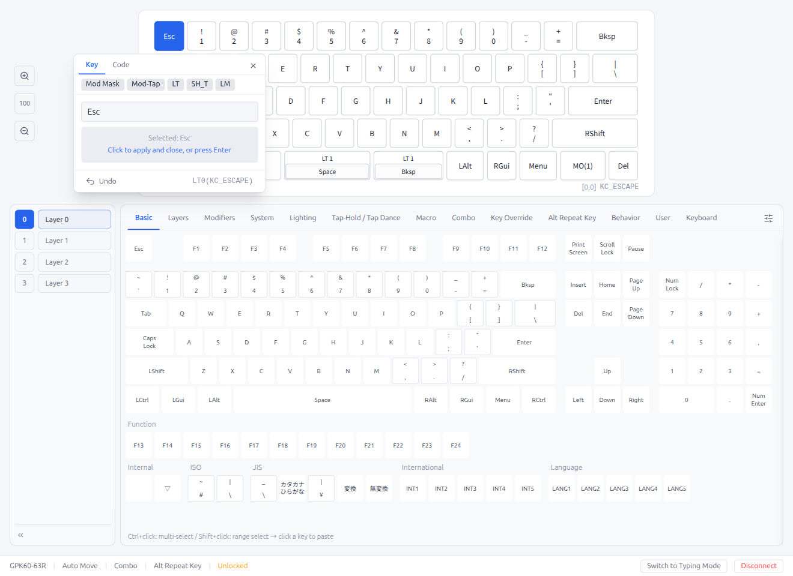
Confirmation: Press Enter to confirm the current selection and close the popover. Press Escape or click outside the popover to close it without changes.
确认：按 Enter 确认当前选择并关闭弹出层。按 Escape 或点击弹出层外部可关闭且不保存更改。
2.5 Layout Options
2.5 布局选项
Some keyboards support multiple physical layouts (e.g., split backspace, ISO enter, different bottom row configurations). When a keyboard has layout options, a Layout Options button (grid icon) appears at the right end of the keycode palette tab bar.
某些键盘支持多种物理布局（例如，分裂退格键、ISO 回车键、不同的底行配置）。当键盘具有布局选项时，键码调色板选项卡栏的右端会出现一个布局选项按钮（网格图标）。
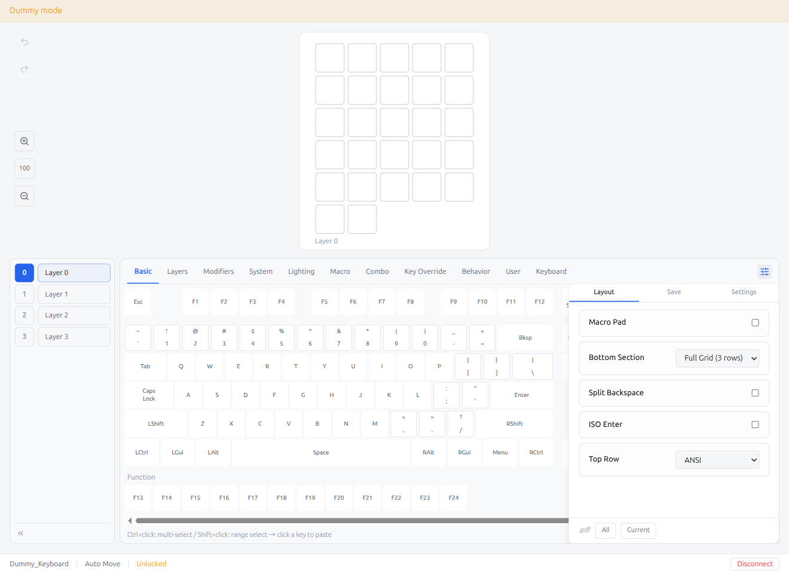
- Click the grid icon to open the Layout Options panel
- 点击网格图标以打开布局选项面板
- Checkbox options: Toggle a layout variant on or off (e.g., "Macro Pad", "Split Backspace", "ISO Enter")
- 复选框选项：切换布局变体的开启或关闭（例如，“宏按键板”、“分裂退格键”、“ISO 回车”）
- Dropdown options: Select from multiple layout variants (e.g., "Bottom Section" with Full Grid / Macro Pad / Arrow Keys choices)
- 下拉选项：从多个布局变体中选择（例如，“底部分区”有完整网格 / 宏按键板 / 方向键选项）
- Changes are applied immediately — the keyboard layout display updates in real time to reflect the selected options
- 更改会立即应用 —— 键盘布局显示会实时更新以反映所选选项
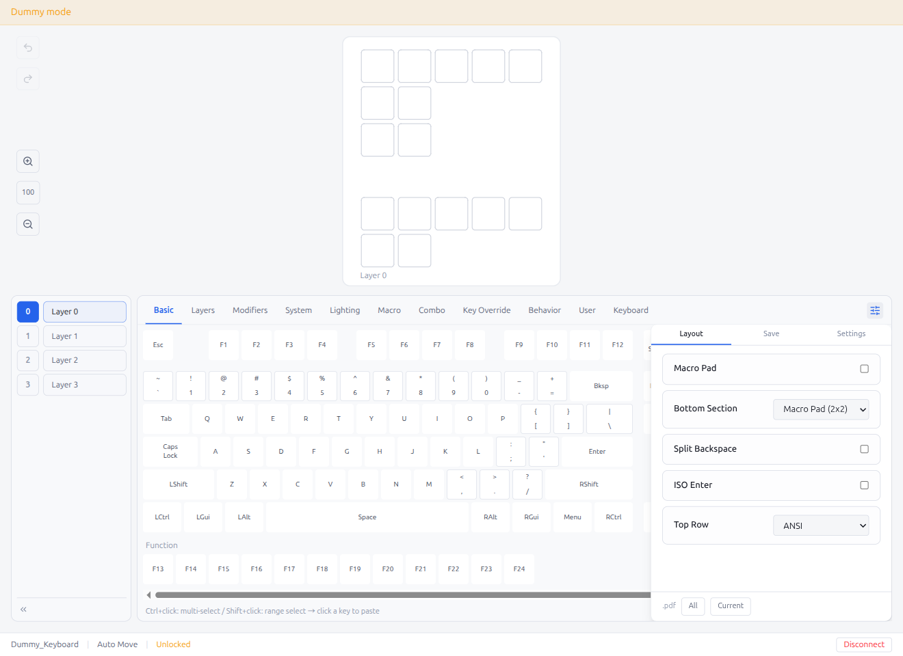
- Selecting a different option updates the visible keys on the keyboard layout
- 选择不同的选项会更新键盘布局上可见的按键
- Layout options are saved to the keyboard and persist across sessions
- 布局选项保存在键盘中，并在不同会话之间持久化
- Click outside the panel or press Escape to close it
- 点击面板外部或按 Escape 关闭它
Note: The Layout Options button only appears for keyboards that define multiple layout variants. Most keyboards with a single fixed layout do not show this button. Screenshots in this section were taken using a dummy JSON definition loaded via "Load from JSON file".
注意：布局选项按钮仅出现在定义了多个布局变体的键盘上。大多数具有单一固定布局的键盘不会显示此按钮。本节中的截图是使用通过“从 JSON 文件加载”加载的虚拟 JSON 定义拍摄的。
3. Keycode Palette
3. 键码调色板
Select keycodes from different categories using the tabbed palette at the bottom of the screen.
使用屏幕底部的选项卡式调色板从不同类别中选择键码。
3.1 Basic
3.1 基础
Standard character keys, function keys, modifier keys, and navigation keys. The Basic tab supports four view types, selectable from the Keycodes Overlay Panel (§3.14):
标准字符键、功能键、修饰键和导航键。“基础”选项卡支持四种视图类型，可在键码覆盖面板 (§3.14) 中选择：
ANSI Keyboard View (default) ANSI 键盘视图（默认）
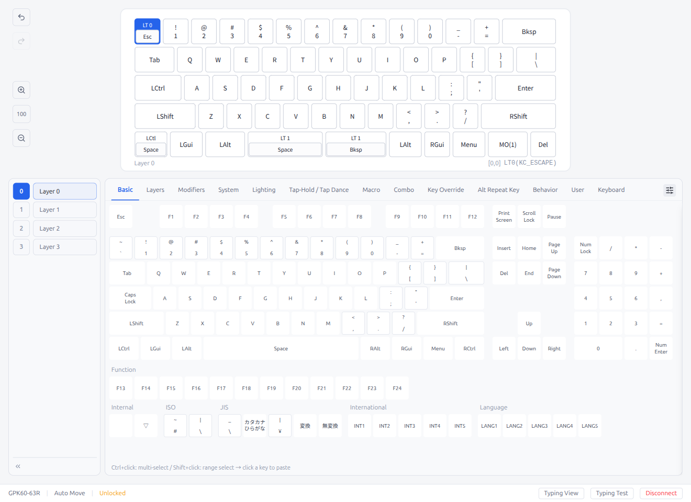
Displays keycodes as an ANSI keyboard layout. Click a key on the visual keyboard to assign it.
将键码显示为 ANSI 键盘布局。点击虚拟键盘上的按键即可分配。
ISO Keyboard View ISO 键盘视图
Displays keycodes as an ISO keyboard layout with the ISO-specific keys.
将键码显示为带有 ISO 特定按键的 ISO 键盘布局。
JIS Keyboard View JIS 键盘视图
Displays keycodes as a JIS keyboard layout with JIS-specific keys (Yen, Ro, Henkan, Muhenkan, Katakana/Hiragana).
将键码显示为带有 JIS 特定按键（日元、Ro、变换、无变换、片假名/平假名）的 JIS 键盘布局。
List View 列表视图
Displays keycodes in the traditional scrollable list format.
以传统的滚动列表格式显示键码。
All views include:
所有视图均包括：
- Character keys (A-Z, 0-9, symbols)
- 字符键
- Function keys (F1-F24)
- 功能键
- Editing keys (Enter, Tab, Backspace, Delete)
- 编辑键
- Navigation keys (arrows, Home, End, PageUp/Down)
- 导航键
- Numpad keys
- 数字小键盘键
- International keys (KC_INT1–KC_INT5)
- 国际键
- Language keys (KC_LANG1–KC_LANG5)
- 语言键
3.2 Layers
3.2 层
Keycodes for layer operations.
用于层操作的键码。
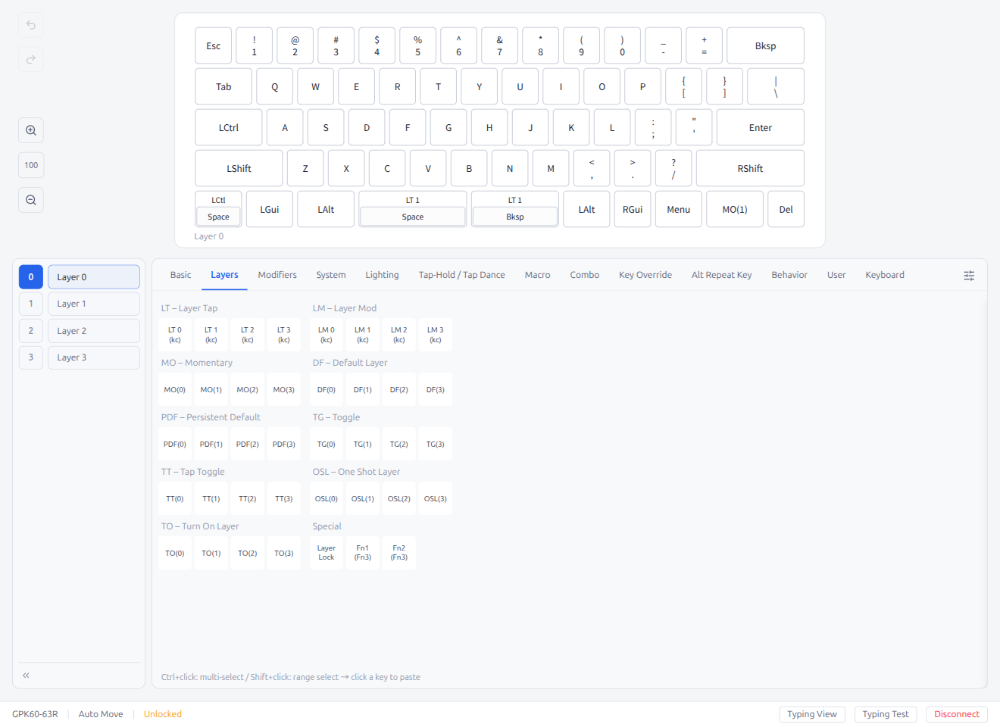
- MO(n): Momentarily activate layer n while held
- MO(n)：长按时瞬间激活层 n
- DF(n): Set default layer to n
- DF(n)：将默认层设置为 n
- TG(n): Toggle layer n
- TG(n)：切换层 n 的开启 / 关闭
- LT(n, kc): Layer on hold, keycode on tap
- LT(n, kc)：长按切层，短按发送键码
- OSL(n): Activate layer n for the next keypress only
- OSL(n)：仅为下一次按键激活层 n
- TO(n): Switch to layer n
- TO(n)：切换到层 n
3.3 Modifiers
3.3 修饰键
Keycodes for modifier key combinations and tap behavior settings.
用于修饰键组合和点按行为设置的键码。
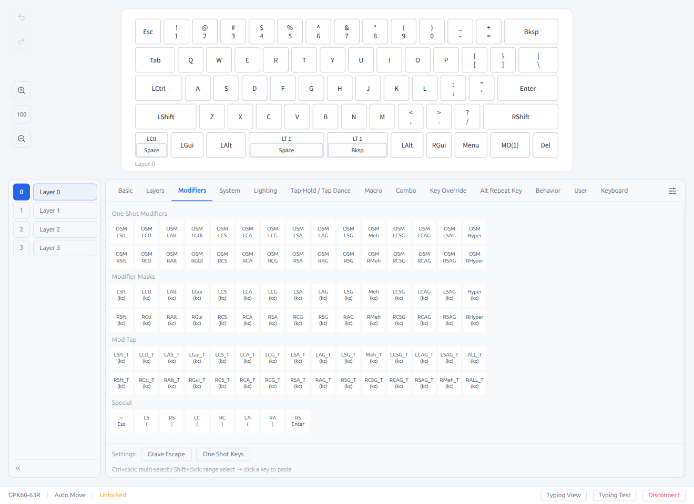
- One-Shot Modifier (OSM): Activate modifier for the next keypress only
- 一键修饰符 (OSM)：仅为下一次按键激活修饰键
- Mod-Tap: Modifier on hold, regular key on tap
- 修饰键点按 (Mod-Tap)：长按为修饰键，短按为常规按键
- Mod Mask: Modifier key combinations
- 修饰键掩码 (Mod Mask)：修饰键组合
3.4 System
3.4 系统
Keycodes for mouse control, media playback, system utilities, and audio/haptic feedback.
用于鼠标控制、媒体播放、系统实用程序以及音频/触感反馈的键码。
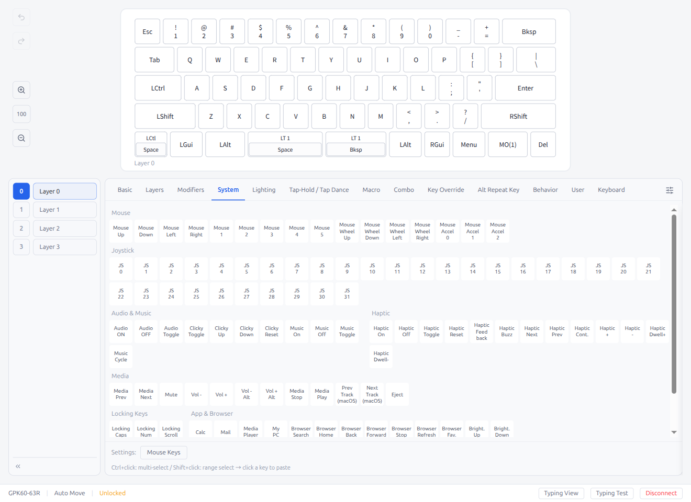
- Mouse: buttons, movement, and scrolling
- 鼠标：按钮、移动和滚动
- Joystick: axis and button keycodes
- 摇杆：轴和按钮键码
- Audio: audio toggle and control keycodes
- 音频：音频切换和控制键码
- Haptic: haptic feedback toggle and control keycodes
- 触感：触感反馈切换和控制键码
- Media Playback: play/stop/volume/track controls
- 媒体播放：播放/停止/音量/曲目控制
- Locking Keys: Locking Caps Lock, Num Lock, Scroll Lock
- 锁定键：锁定大写锁定、数字锁定、滚动锁定
- App / Browser: application launcher and browser navigation keys
- 应用 / 浏览器：应用程序启动器和浏览器导航键
- System Control: system power, sleep, wake
- 系统控制：系统电源、睡眠、唤醒
- Boot: enter bootloader mode (QK_BOOT)
- 引导：进入引导加载程序模式 (QK_BOOT)
Note: The MIDI tab is only displayed for MIDI-capable keyboards. When available, it appears between System and Lighting.
注意：MIDI 选项卡仅在支持 MIDI 的键盘上显示。如果可用，它将显示在“系统”和“灯效”之间。
3.5 Lighting
3.5 灯效
Keycodes for backlight and RGB lighting controls.
用于背光和 RGB 灯效控制的键码。
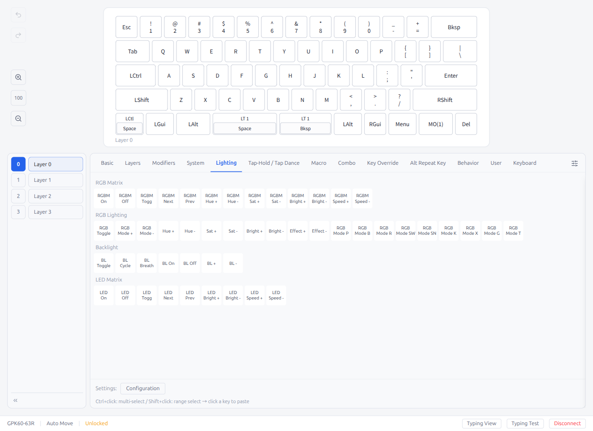
- RGB Matrix controls
- RGB 矩阵控制
- RGB Lighting controls
- RGB 灯效控制
- Backlight controls
- 背光控制
- LED Matrix controls
- LED 矩阵控制
3.6 Tap-Hold / Tap Dance
3.6 点按-长按 / 点按跳舞 (Tap Dance)
Keycodes that assign different actions to tap and hold.
为点按和长按分配不同动作的键码。
The Tap Dance section displays a tile grid preview showing all entries at a glance:
“点按跳舞”部分显示一个平铺网格预览，让所有条目一目了然：
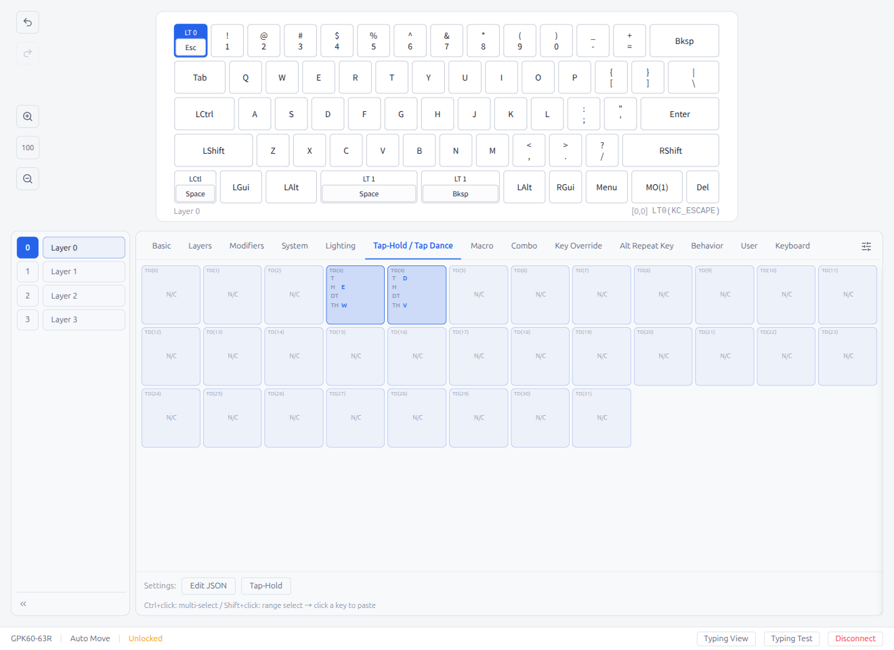
- Each tile shows the entry number and a summary of configured actions
- 每个方块显示条目编号和已配置动作的摘要
- Configured entries display their tap/hold actions; unconfigured tiles show the number only
- 已配置的条目显示其点按/长按动作；未配置的方块仅显示编号
- Click a tile to open the Tap Dance edit modal directly to that entry
- 点击方块可直接打开该条目的“点按跳舞”编辑弹窗
- Configure tap, hold, double-tap, and other actions for each entry
- 为每个条目配置点按、长按、双击和其他动作
- Edit JSON button at the bottom opens a JSON editor for bulk editing all entries (see §5.6)
- 底部的编辑 JSON 按钮可打开 JSON 编辑器以批量编辑所有条目（见 §5.6）
3.7 Macro
3.7 宏
Macro keycodes.
宏键码。
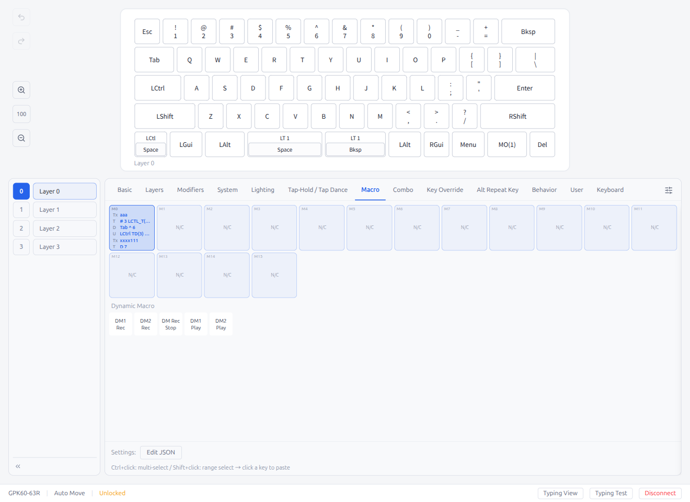
The Macro section displays a tile grid preview showing all entries at a glance:
“宏”部分显示一个平铺网格预览，让所有条目一目了然：
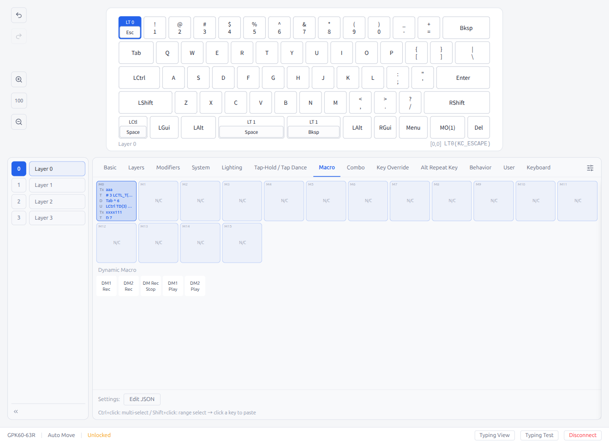
- Each tile shows the macro number and a preview of the recorded sequence
- 每个方块显示宏编号和录制序列的预览
- Configured entries display a summary of key actions; unconfigured tiles show the number only
- 已配置的条目显示按键动作摘要；未配置的方块仅显示编号
- Click a tile to open the Macro edit modal directly to that entry
- 点击方块可直接打开该条目的宏编辑弹窗
- Record sequences of key inputs as macros
- 将按键输入序列录制为宏
- Edit JSON button at the bottom opens a JSON editor for bulk editing all entries (see §5.6)
- 底部的编辑 JSON 按钮可打开 JSON 编辑器以批量编辑所有条目（见 §5.6）
3.8 Combo
3.8 组合键 (Combo)
Combo keycodes for simultaneous key-press combinations.
用于同时按下的组合键键码。
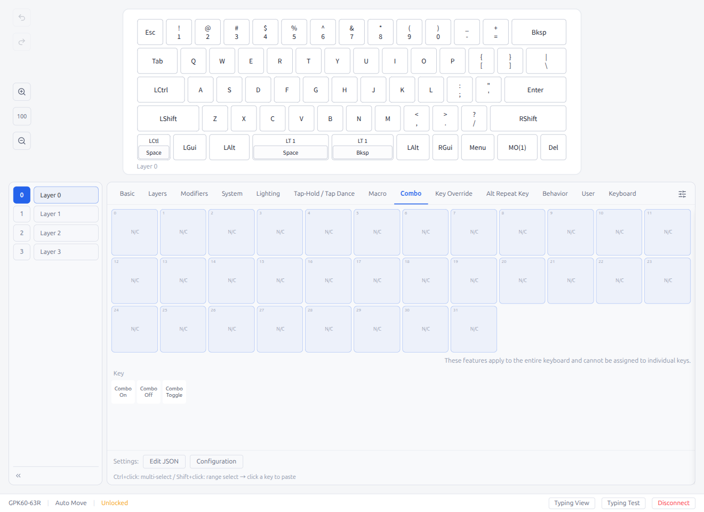
The Combo tab displays a tile grid preview showing all entries. A note reads: "These features apply to the entire keyboard, not just the current layer."
“组合键”选项卡显示包含所有条目的平铺网格预览。注释显示：“这些功能适用于整个键盘，而不仅仅是当前层。”
- Each tile shows the combo number and a summary (e.g., "A + B → C")
- 每个方块显示组合键编号和摘要（例如，“A + B → C”）
- Click a tile to open the Combo edit modal directly to that entry (§5.2)
- 点击方块可直接打开该条目的组合键编辑弹窗 (§5.2)
- Combo keycodes (CMB_000–CMB_031) can be assigned to keys for triggering combos
- 组合键键码 (CMB_000–CMB_031) 可以分配给按键以触发组合键
- Settings: Configuration button at the bottom opens a settings modal for combo-related timeout configuration (e.g., Combo time out period)
- 底部的设置：配置按钮可打开用于组合键相关超时配置（例如，组合键超时时间）的设置弹窗
- Edit JSON button at the bottom opens a JSON editor for bulk editing all entries (see §5.6)
- 底部的编辑 JSON 按钮可打开 JSON 编辑器以批量编辑所有条目（见 §5.6）
3.9 Key Override
3.9 按键覆盖 (Key Override)
Key Override keycodes for replacing key outputs when specific modifiers are held.
用于在按住特定修饰键时替换按键输出的键码。
The Key Override tab displays a tile grid preview showing all entries and a settings area.
“按键覆盖”选项卡显示包含所有条目的平铺网格预览和一个设置区域。
- Each tile shows the override number and a summary
- 每个方块显示覆盖编号和摘要
- Click a tile to open the Key Override edit modal directly to that entry (§5.3)
- 点击方块可直接打开该条目的按键覆盖编辑弹窗 (§5.3)
- Edit JSON button at the bottom opens a JSON editor for bulk editing all entries (see §5.6)
- 底部的编辑 JSON 按钮可打开 JSON 编辑器以批量编辑所有条目（见 §5.6）
3.10 Alt Repeat Key
3.10 Alt 重复键 (Alt Repeat Key)
Alt Repeat Key keycodes for context-aware alternate repeat key bindings.
用于上下文相关的备选重复键绑定的键码。
The Alt Repeat Key tab displays a tile grid preview showing all entries and a settings area.
“Alt 重复键”选项卡显示包含所有条目的平铺网格预览和一个设置区域。
- Each tile shows the entry number and a summary
- 每个方块显示条目编号和摘要
- Click a tile to open the Alt Repeat Key edit modal directly to that entry (§5.4)
- 点击方块可直接打开该条目的 Alt 重复键编辑弹窗 (§5.4)
- Edit JSON button at the bottom opens a JSON editor for bulk editing all entries (see §5.6)
- 底部的编辑 JSON 按钮可打开 JSON 编辑器以批量编辑所有条目（见 §5.6）
3.11 Behavior
3.11 行为
Keycodes for advanced QMK behavior features. 用于高级 QMK 行为功能的键码。
- Magic: Magic keycodes for swapping and toggling keyboard behaviors
- 魔法 (Magic)：用于交换和切换键盘行为的魔法键码
- Mode: NKRO toggle, mode switching keycodes
- 模式 (Mode)：NKRO 切换、模式切换键码
- Auto Shift: Auto Shift toggle and configuration keycodes
- 自动上档 (Auto Shift)：自动上档切换和配置键码
- Swap Hands: Swap Hands keycodes and Swap Hands Tap variants
- 换手 (Swap Hands)：换手键码和换手点按变体
- Caps Word: Caps Word toggle
- 大写单词 (Caps Word)：大写单词切换
3.12 User
3.12 用户
User-defined keycodes.
用户自定义键码。
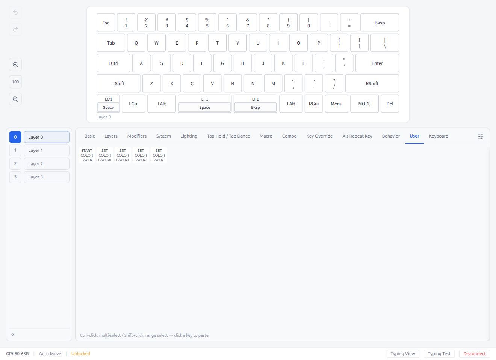
- Custom keycodes defined in firmware (e.g.,
CUSTOM_1,CUSTOM_2) - 固件中定义的自定义键码（例如，
CUSTOM_1，CUSTOM_2） - When exporting
keymap.c, custom keycodes use their configured names instead of genericUSER00/USER01identifiers, and anenum custom_keycodesblock is generated automatically - 导出
keymap.c时，自定义键码将使用其配置的名称，而不是通用的USER00/USER01标识符，并会自动生成enum custom_keycodes块
3.13 Keyboard (Device Picker)
3.13 键盘（设备选择器）
The Keyboard tab lets you copy keycodes from other connected keyboards or from saved files.
“键盘”选项卡允许您从其他已连接的键盘或已保存的文件中复制键码。
Use case: While editing a keyboard, you wonder how another keyboard's keymap is set up — but that keyboard isn't connected right now. If you've previously saved its data (via the Save panel), you can load it from the File source in this tab to browse its keymap and copy keycodes directly into your current layout.
使用场景：在编辑键盘时，您想知道另一个键盘的键位图是如何设置的 —— 但那个键盘现在没连接。如果您以前保存过它的数据（通过“保存”面板），则可以从该选项卡中的文件源加载它，浏览其键位图并直接将键码复制到当前布局中。
Device List 设备列表
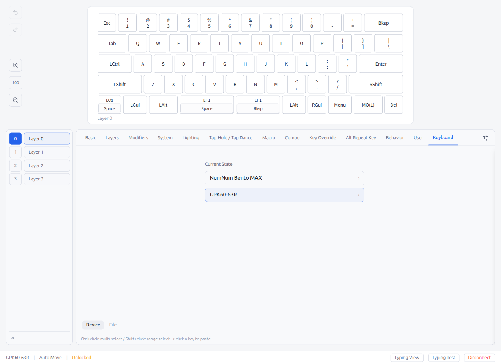
When you open the Keyboard tab, a list of all connected Vial-compatible keyboards is displayed. This list updates in real time as you plug in or unplug devices.
当您打开“键盘”选项卡时，会显示所有已连接的兼容 Vial 的键盘列表。该列表会在您插拔设备时实时更新。
- Click a device to load its keymap — the currently connected keyboard shows its live keymap instantly; other devices are probed via a temporary USB connection
- 点击一个设备以加载其键位图 —— 当前连接的键盘会立即显示其实时键位图；其他设备通过临时 USB 连接进行探测
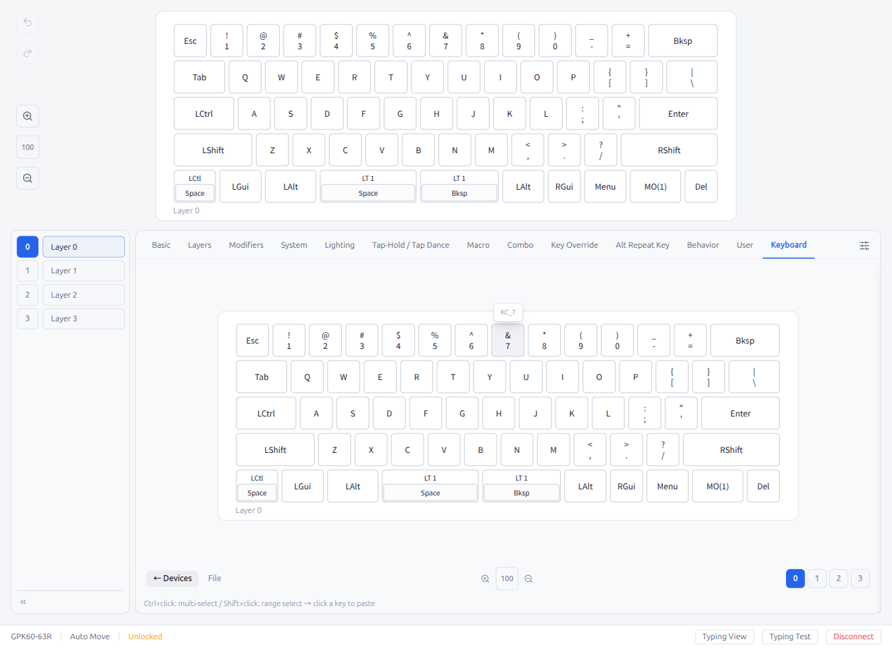
- Once loaded, click any key on the displayed keyboard to assign that keycode to the selected key on the main keymap
- 加载后，点击所显示键盘上的任何按键，即可将该键码分配给主键位图上的选定按键
- Use Ctrl+click for multi-select, Shift+click for range select
- 使用 Ctrl+点击进行多选，Shift+点击进行范围选择
- Layer buttons at the bottom right let you browse different layers
- 右下角的层按钮允许您浏览不同的层
- Zoom controls (+ / numeric input / −) adjust the picker keyboard size (30%–200%). When viewing another keyboard, its saved zoom level is loaded automatically
- 缩放控件（+ / 数字输入 / -）调整选择器键盘的大小 (30%–200%)。查看另一个键盘时，其保存的缩放级别会自动加载
- Press Escape to clear the picker selection
- 按 Escape 清除选择器的选择
File Source 文件源
Click the File button at the bottom to switch to the file source. This shows saved keyboard snapshots and allows loading .pipette files — the same keycode picking workflow applies.
点击底部的文件按钮切换到文件源。这会显示保存的键盘快照，并允许加载 .pipette 文件 —— 同样的键码选择流程也适用。
Note: Only V2 format (
.pipette) files are supported in the key picker. If a legacy V1 format file is selected, a warning is displayed prompting you to connect the keyboard and open the keymap to migrate the data.
注意：按键选择器仅支持 V2 格式 (.pipette) 文件。如果选择了旧版 V1 格式文件，将显示警告，提示您连接键盘并打开键位图以迁移数据。
Composite Keycodes
复合键码
When clicking a composite key (e.g., LT1(KC_SPC)) in the picker, the full keycode is assigned as-is. Inner/outer parts are not split — the complete keycode is copied to the target key.
在选择器中点击复合键（例如 LT1(KC_SPC)）时，完整的键码将按原样分配。内部/外部部分不会拆分 —— 完整的键码将复制到目标按键。
Note: The Keyboard tab is hidden when editing the inner part of a mask key (e.g., choosing the
KC_SPCinsideLT1(KC_SPC)), since composite keycodes cannot be assigned to the inner byte.
注意：在编辑掩码键的内部（例如在LT1(KC_SPC)内选择KC_SPC）时，“键盘”选项卡会被隐藏，因为复合键码不能分配给内部字节。
3.14 Keycodes Overlay Panel
3.14 键码覆盖面板
The Keycodes Overlay Panel provides quick access to editor tools and save functions. Toggle it with the panel button at the right end of the keycode tab bar.
键码覆盖面板提供对编辑器工具和保存功能的快速访问。使用键码选项卡栏右端的面板按钮进行切换。
Settings Tab 设置选项卡
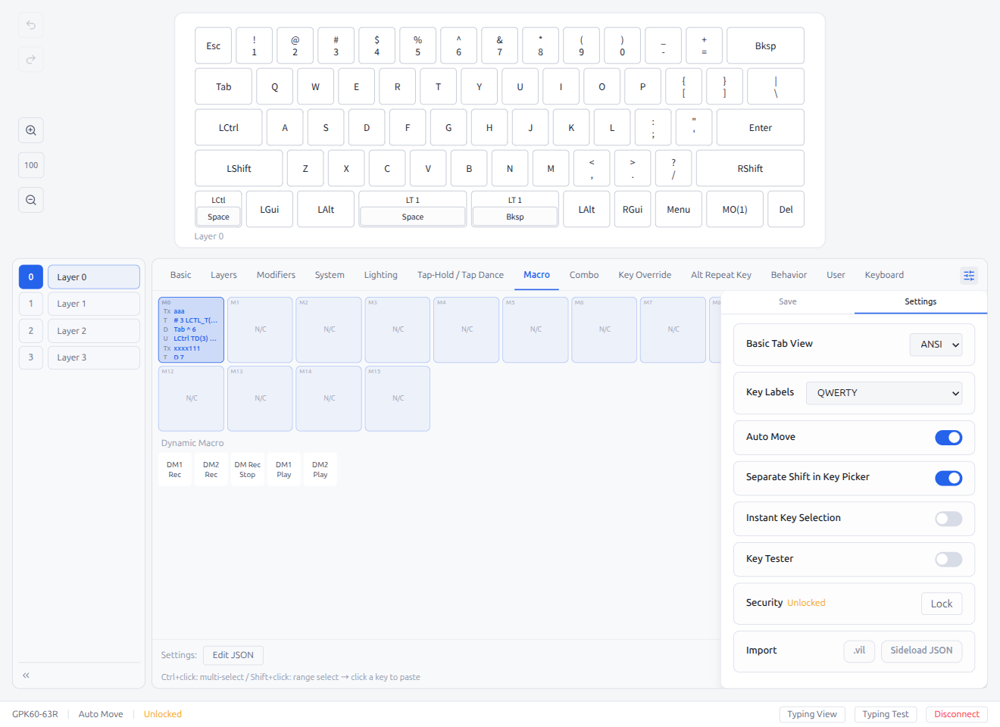
- Basic View Type: Switch between ANSI keyboard, ISO keyboard, JIS keyboard, and List views for the Basic tab
- 基础视图类型：在“基础”选项卡的 ANSI 键盘、ISO 键盘、JIS 键盘和列表视图之间切换
- Keyboard Layout: Select the display layout for key labels (QWERTY, Dvorak, etc.)
- 键盘布局：选择按键标签的显示布局（QWERTY, Dvorak 等）
- Auto Advance: Toggle automatic advancement to the next key after assigning a keycode
- 自动前进：切换在分配键码后自动前进到下一个按键的功能
- Instant Key Selection: Toggle instant key selection mode (see §2.2 for behavior details)
- 即时按键选择：切换即时按键选择模式（行为详情见 §2.2）
- Separate Shift in Key Picker: Toggle split display for combined keycodes (e.g., show Mod-Tap as two halves)
- 在按键选择器中分离 Shift：切换组合键码的拆分显示（例如，将 Mod-Tap 显示为两部分）
- Key Tester: Toggle Matrix Tester mode (supported keyboards only)
- 按键测试器：切换矩阵测试器模式（仅限受支持的键盘）
- Security: Shows lock status (Locked/Unlocked) with a Lock button
- 安全性：显示锁定状态（已锁定 / 已解锁），并带有锁定按钮
- Import: Restore from
.vilfiles or sideload custom JSON definitions - 导入：从
.vil文件恢复或侧向加载自定义 JSON 定义 - Reset Keyboard Data: Reset keyboard to factory defaults
- 重置键盘数据：将键盘重置为出厂默认设置
Save Tab 保存选项卡
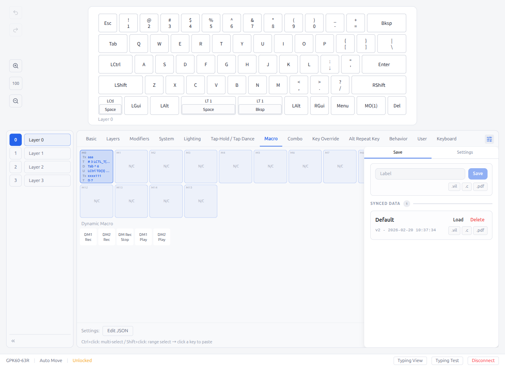
- Export Current State: Download keymap as
.vil,keymap.c, PDF keymap cheat sheet, or PDF layout export (key outlines with summary pages for Tap Dance, Macro, Combo, Key Override, and Alt Repeat Key entries) - 导出当前状态：将键位图下载为
.vil,keymap.c, PDF 键位图速查表或 PDF 布局导出（包含按键轮廓以及点按跳舞、宏、组合键、按键覆盖和 Alt 重复键条目的摘要页） - Save Current State: Save a snapshot of the current keyboard state with a label
- 保存当前状态：保存当前键盘状态的快照并添加标签
- Synced Data: List of saved snapshots with Load, Rename, Delete, and Export actions
- 已同步数据：已保存快照的列表，带有加载、重命名、删除和导出操作
- This is the same Save panel as the standalone editor settings (§6)
- 这与独立编辑器设置 (§6) 中的“保存”面板相同
Layout Tab (when available) 布局选项卡（可用时）
Some keyboards support layout options (see §2.5). When available, a Layout tab appears as the first tab in the overlay panel, providing access to the same layout options.
某些键盘支持布局选项（见 §2.5）。如果可用，“布局”选项卡将作为覆盖面板中的第一个选项卡出现，提供对相同布局选项的访问。
4. Toolbar
4. 工具栏
The toolbar on the left side of the keymap editor provides the following features.
键位编辑器左侧的工具栏提供以下功能。
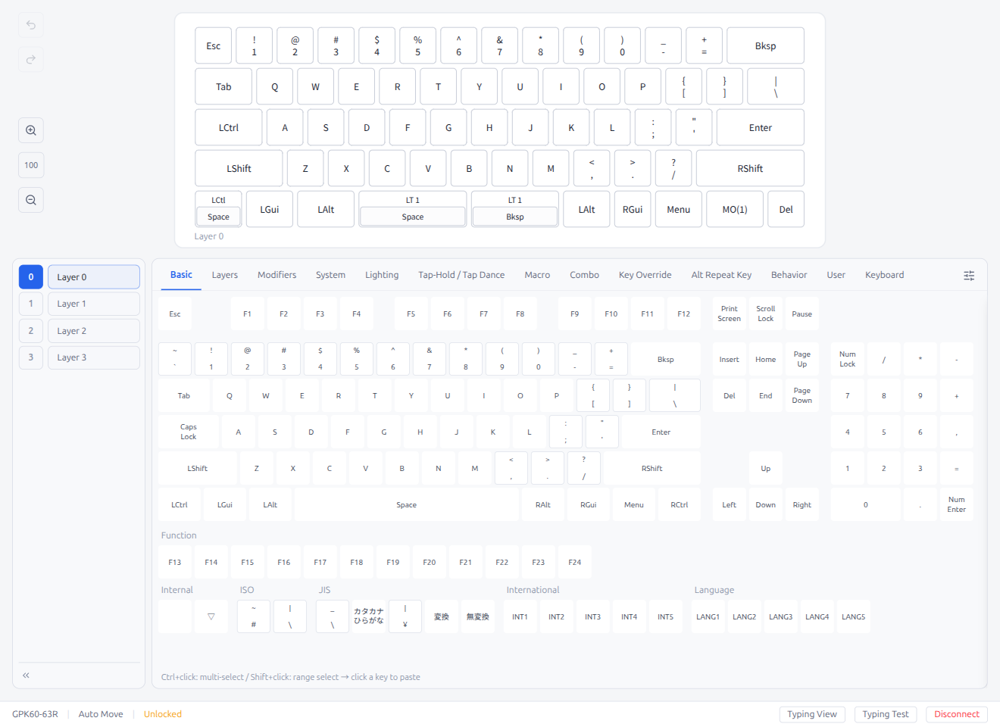
4.1 Zoom
4.1 缩放
Adjusts the keyboard layout display scale. Range: 30%–200% (default 100%).
调整键盘布局的显示比例。范围：30%–200%（默认 100%）。
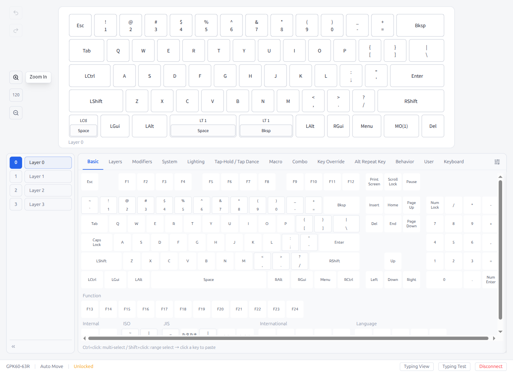
- (+) button to zoom in
- (+) 按钮放大
- (-) button to zoom out
- (-) 按钮缩小
- Can also be adjusted in editor settings
- 也可以在编辑器设置中调整
- Zoom level is saved per keyboard and restored automatically on reconnect
- 缩放级别按键盘保存，并在重新连接时自动恢复
4.2 Undo / Redo (Keymap History)
4.2 撤销 / 重做（键位图历史记录）
The keymap editor automatically records a history of keycode changes. You can navigate through this history to undo or redo changes.
键位编辑器会自动记录键码更改的历史记录。您可以浏览此历史记录以撤销或重做更改。
| Method 方法 |
Scope 范围 |
How to use 如何使用 |
|---|---|---|
| Keyboard shortcuts 键盘快捷键 |
Full history 完整历史 |
Ctrl/Cmd+Z (Undo), Ctrl+Y / Ctrl/Cmd+Shift+Z (Redo) |
| Toolbar buttons 工具栏按钮 |
Full history 完整历史 |
Undo / Redo buttons in the left toolbar 左侧工具栏的撤销 / 重做按钮 |
| Popover buttons 弹出层按钮 |
Last single change only 仅最后一次更改 |
Undo / Redo buttons in the popover footer 弹出层底部的撤销 / 重做按钮 |
- History is cleared when switching keyboards or disconnecting
- 切换键盘或断开连接时，历史记录会被清除
- The maximum history size can be configured in Settings → Defaults → Max Keymap History (see §6.1)
- 最大历史记录容量可以在“设置”→“默认值”→“最大键位图历史记录”中配置（见 §6.1）
- All keymap mutation paths are tracked: single key edits, popover selections, mod-mask changes, paste, and copy-layer operations
- 所有键位图变动路径都会被跟踪：单键编辑、弹出层选择、修饰键掩码更改、粘贴和复制层操作
4.3 Typing Test
4.3 打字测试
A typing practice feature. Test your typing with the current keymap while viewing the keyboard layout below. The layout highlights key presses in real time, so you can verify that your physical keymap matches the on-screen display.
打字练习功能。在查看下方键盘布局的同时，使用当前键位图测试您的打字。布局会实时高亮显示按键按下情况，以便您验证物理键位图是否与屏幕显示一致。
Click the Typing Test button in the status bar to enter typing test mode.
点击状态栏中的打字测试按钮进入打字测试模式。
Modes
模式
Three test modes are available, selectable from the mode tabs at the top:
提供三种测试模式，可从顶部的模式选项卡中选择：
Words Mode 单词模式
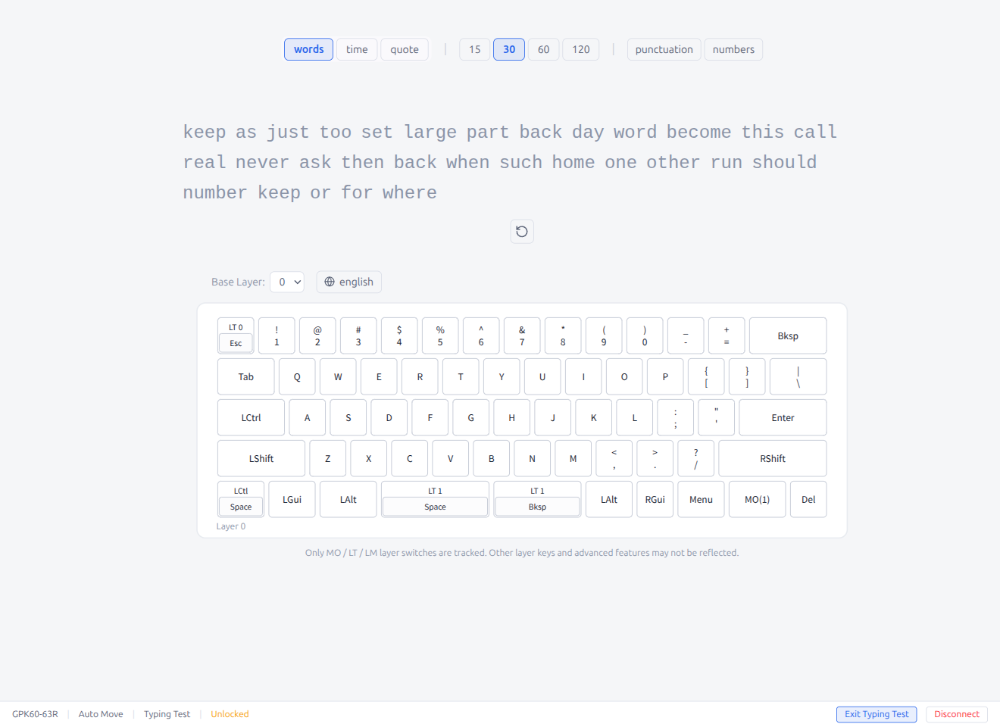
- Type a fixed number of random words (15 / 30 / 60 / 120)
- 输入固定数量的随机单词 (15 / 30 / 60 / 120)
- The test ends when all words are completed
- 测试在所有单词完成后结束
Time Mode 时间模式
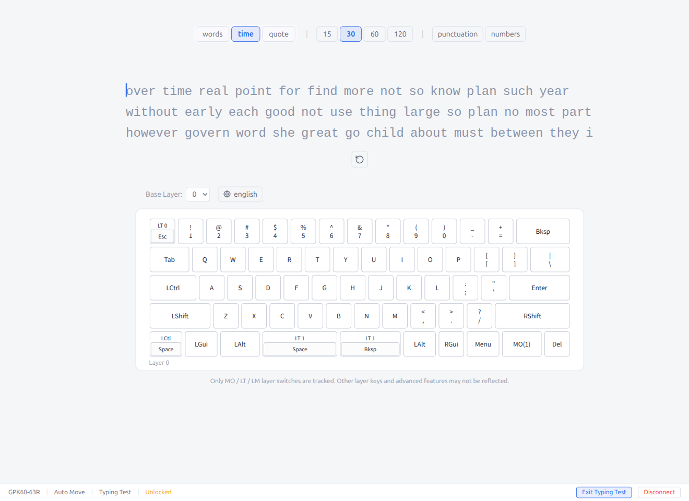
- Type as many words as possible within a time limit (15 / 30 / 60 / 120 seconds)
- 在时间限制内尽可能多地输入单词 (15 / 30 / 60 / 120 秒)
- A countdown timer shows remaining time
- 倒计时器显示剩余时间
Quote Mode 引用模式
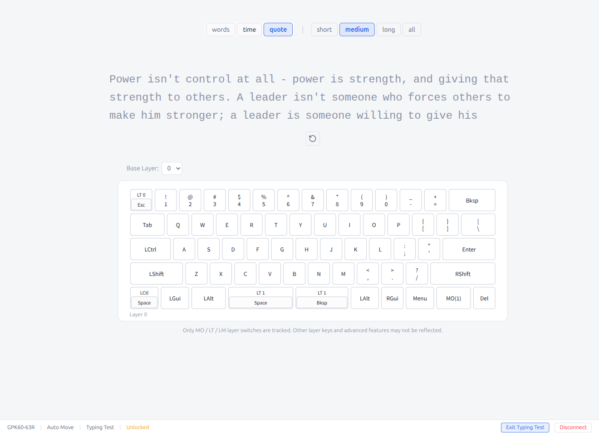
- Type a real-world quote (short / medium / long / all)
- 输入现实世界的名言（短 / 中 / 长 / 全部）
- The quote source is shown after completion
- 完成后会显示引用的来源
Options
选项
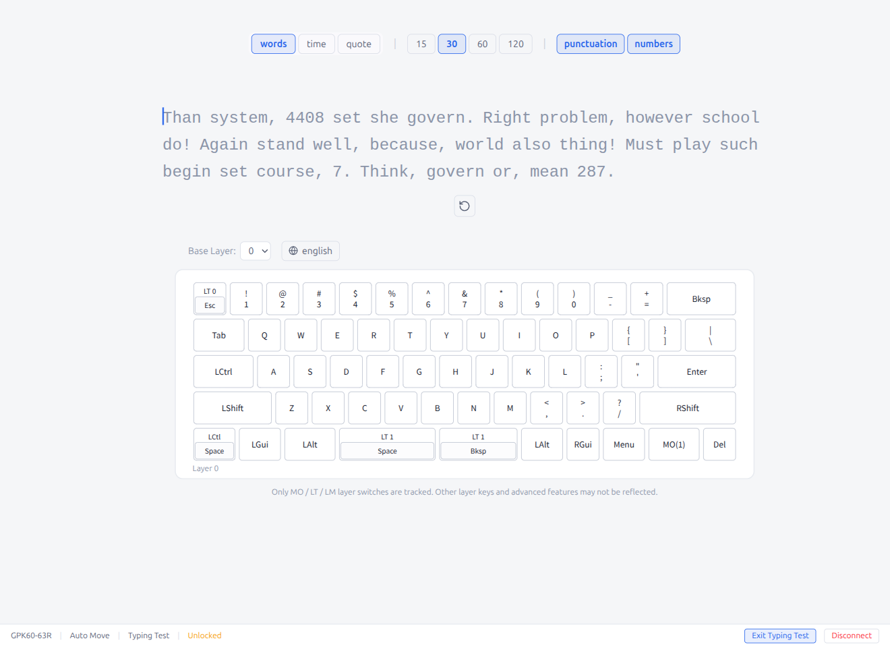
In Words and Time modes, you can toggle additional options:
在“单词”和“时间”模式中，您可以切换其他选项：
- Punctuation: Adds punctuation marks (commas, periods, etc.) to the word list
- 标点符号：在单词列表中添加标点符号（逗号、句号等）
- Numbers: Adds numbers to the word list
- 数字：在单词列表中添加数字
These toggles are not available in Quote mode, which uses the original text as-is.
这些切换开关在“引用”模式下不可用，该模式按原样使用原始文本。
During a Test
测试期间
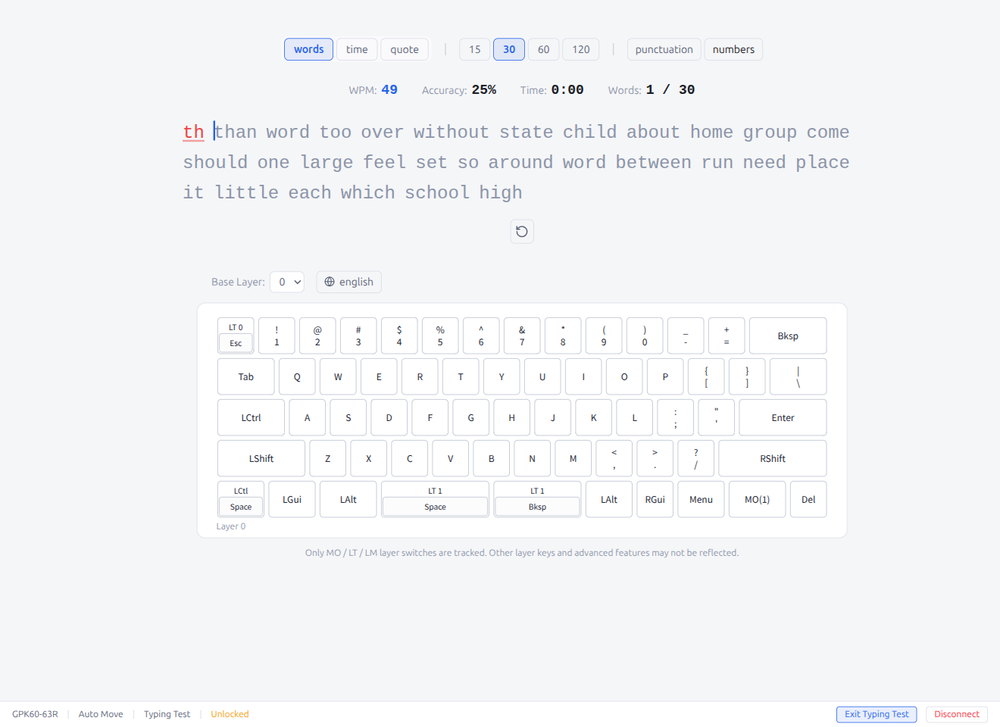
While typing, the following stats are displayed in real time:
输入时，以下统计数据会实时显示：
- WPM: Words Per Minute (current typing speed)
- WPM：每分钟单词数（当前打字速度）
- Accuracy: Percentage of correctly typed characters
- 准确率：输入正确的字符百分比
- Time: Elapsed time (or remaining time in Time mode)
- 时间：已用时间（或“时间”模式下的剩余时间）
- Words: Current word / total words
- 单词数：当前单词 / 总单词数
Correctly typed words turn green. Incorrect characters are highlighted in red with an underline. The cursor advances as you type, and words scroll automatically.
输入正确的单词会变绿。错误的字符会以红色高亮并带有下划线。光标随着您的输入而前进，单词会自动滚动。
- Press the restart button (↺) to restart the test at any time
- 随时按重新启动按钮 (↺) 重新开始测试
- Press Escape to exit typing test mode
- 按 Escape 退出打字测试模式
- The keyboard layout below the test area shows key presses in real time via the Vial matrix tester protocol
- 测试区域下方的键盘布局通过 Vial 矩阵测试器协议实时显示按键按下情况
Typing View (View-Only Mode)
打字视图（仅查看模式）
Typing View displays only the keyboard layout in a compact, resizable window — ideal for overlaying on top of other applications while practicing.
打字视图在一个紧凑的、可缩放的窗口中仅显示键盘布局 —— 非常适合在练习时叠加在其他应用程序之上。
Click the Typing View button in the status bar (visible when Typing Test is not active) to enter view-only mode.
点击状态栏中的打字视图按钮（在打字测试未激活时可见）进入仅查看模式。
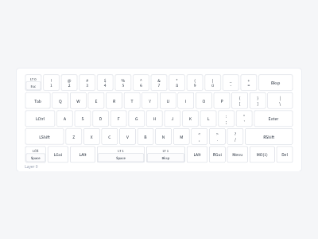
- The window shows only the keyboard layout with real-time key press highlighting
- 窗口仅显示键盘布局，并带有实时按键高亮
- The toolbar, keycode palette, typing test UI, and status bar are hidden
- 工具栏、键码调色板、打字测试 UI 和状态栏均被隐藏
- The window maintains its aspect ratio when resized
- 窗口在调整大小时保持其宽高比
Controls Panel 控制面板
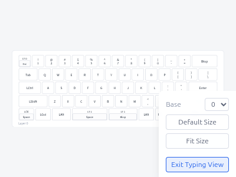
Click anywhere on the keyboard area to toggle the controls panel (bottom-right popup):
点击键盘区域的任何位置以切换控制面板（右下角弹窗）：
- Base: Select which layer to display (when the keyboard has multiple layers)
- 基准层：选择要显示的层（当键盘有多个层时）
- top: Keep the window above other windows (always-on-top; not available on Wayland)
- 置顶：保持窗口在其他窗口之上（始终置顶；在 Wayland 上不可用）
- Default Size: Reset the window to its default calculated size
- 默认大小：将窗口重置为其默认计算大小
- Fit Size: Adjust the window height to match the current width while preserving the aspect ratio
- 适应大小：调整窗口高度以匹配当前宽度，同时保持宽高比
- Exit Typing View: Return to the full editor
- 退出打字视图：返回完整编辑器
Press Escape or click the keyboard area again to close the panel. A hint text appears at the bottom when hovering over the window. The window size and always-on-top preference are saved per keyboard.
按 Escape 或再次点击键盘区域可关闭面板。将鼠标悬停在窗口上时，底部会出现提示文本。窗口大小和始终置顶偏好会按键盘保存。
Note: Auto-lock is suspended while in Typing View mode. If the keyboard is disconnected while in view-only mode, the window automatically restores to its normal size.
注意：在“打字视图”模式下，自动锁定会暂停。如果在仅查看模式下键盘断开连接，窗口会自动恢复到正常大小。
5. Detail Setting Editors
5. 详细设置编辑器
Open detail setting modals from their dedicated keycode tabs. Lighting opens via a Settings: Configuration button at the bottom of its tab; Combo, Key Override, and Alt Repeat Key detail editors open by clicking an entry on their respective tabs.
从专用的键码选项卡中打开详细设置弹窗。“灯效”通过其选项卡底部的设置：配置按钮打开；“组合键”、“按键覆盖”和“Alt 重复键”详细编辑器通过点击其各自选项卡上的条目打开。
5.1 Lighting Settings
5.1 灯效设置
Open from the Settings: Configuration button on the Lighting tab. Configure RGB lighting colors and effects.
从“灯效”选项卡上的设置：配置按钮打开。配置 RGB 灯效颜色和效果。
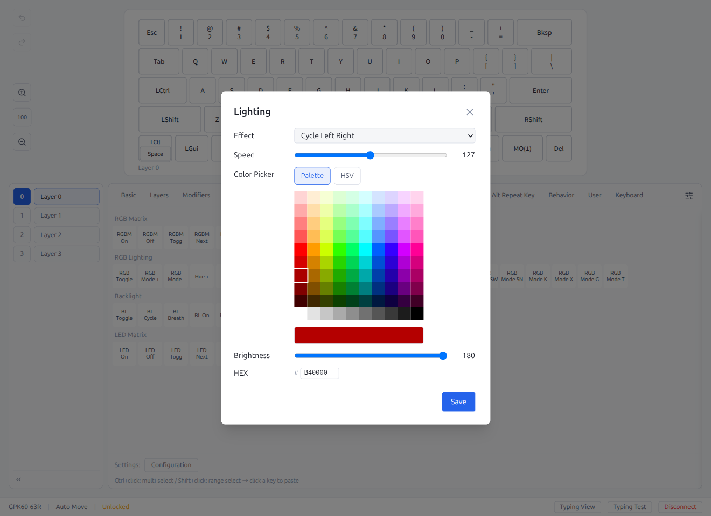
- Select colors with the HSV color picker
- 使用 HSV 拾色器选择颜色
- Choose colors from preset palette
- 从预设调色板中选择颜色
- Adjust effects and speed
- 调整效果和速度
- Click Save to apply
- 点击“保存”以应用
5.2 Combo
5.2 组合键 (Combo)
Configure simultaneous key press combinations to trigger different keys. The Combo tab displays an inline tile grid; clicking an entry opens the detail editor modal directly.
配置同时按下的按键组合以触发不同的按键。“组合键”选项卡显示内联平铺网格；点击条目可直接打开详细编辑器弹窗。
Tile Grid (Combo tab) 平铺网格（组合键选项卡）

The Combo tab shows entries as a numbered list (0--31). Configured entries display a summary (e.g., "A + B → C"). Click an entry to open the detail editor. Combo keycodes (Combo On, Combo Off, Combo Toggle) are shown below the list. A Settings: Configuration button at the bottom opens a settings modal for QMK Combo timeout configuration (e.g., Combo time out period).
“组合键”选项卡将条目显示为编号列表 (0--31)。已配置的条目显示摘要（例如，“A + B → C”）。点击条目可打开详细编辑器。组合键码（开启、关闭、切换组合键）显示在列表下方。底部的设置：配置按钮可打开一个设置弹窗，用于 QMK 组合键超时配置（例如，组合键超时时间）。
Detail Editor 详细编辑器
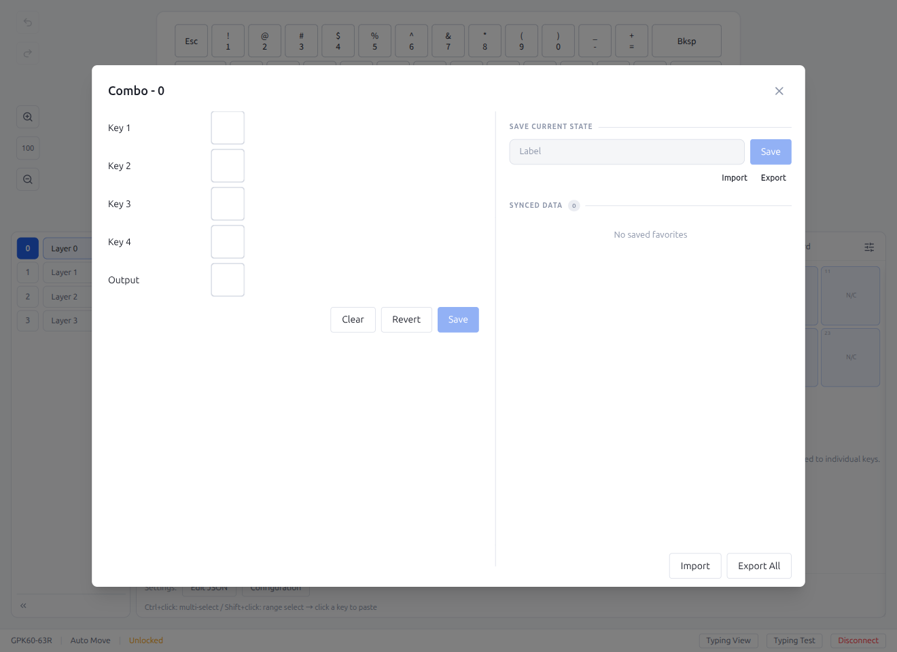
- Left panel: Combo editor with Key 1--4 and Output fields.
- 左侧面板：带有按键 1--4 和输出字段的组合键编辑器。
- Right panel: Inline favorites panel (Save Current State / Synced Data / Import / Export All)
- 右侧面板：内联收藏夹面板（保存当前状态 / 已同步数据 / 导入 / 全部导出）
- Clear resets all fields; Revert restores the last saved state. Both use two-step confirmation.
- 清除重置所有字段；还原恢复到上次保存的状态。两者都使用两步确认。
- Save writes changes to the keyboard
- 保存将更改写入键盘
5.3 Key Override
5.3 按键覆盖 (Key Override)
Replace specific key inputs with different keys. The Key Override tab displays an inline tile grid; clicking an entry opens the detail editor modal directly.
使用不同的按键替换特定的按键输入。“按键覆盖”选项卡显示内联平铺网格；点击条目可直接打开详细编辑器弹窗。
Tile Grid (Key Override tab) 平铺网格（按键覆盖选项卡）
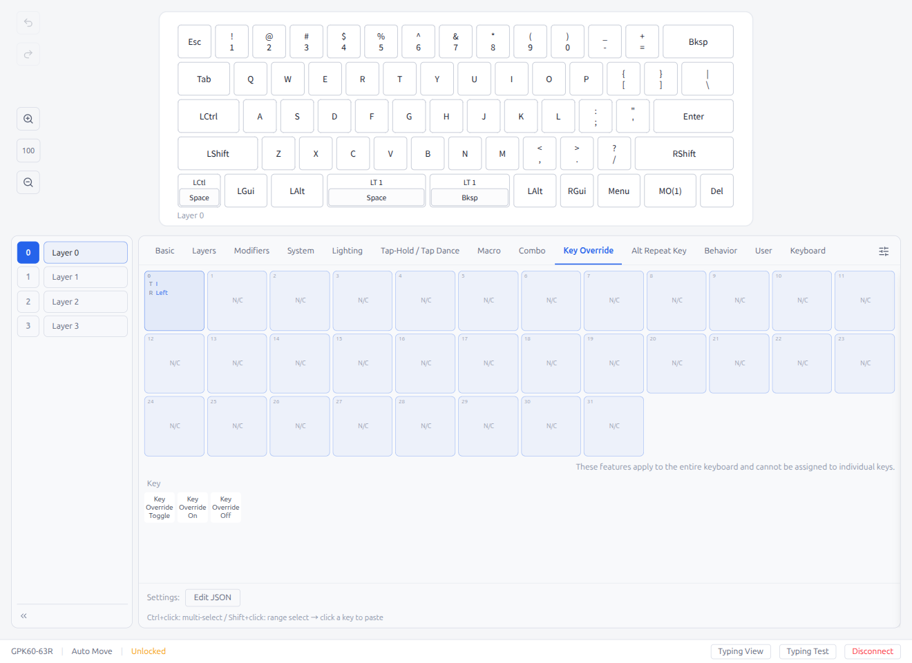
Shows entries as a numbered list. Configured entries display a summary. Click an entry to open the detail editor.
将条目显示为编号列表。已配置的条目显示摘要。点击条目可打开详细编辑器。
Detail Editor 详细编辑器
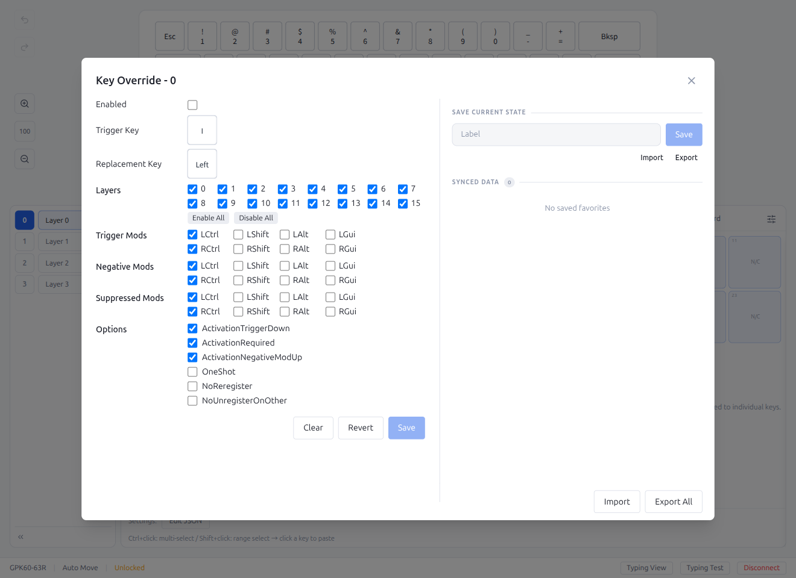
- Left panel: Trigger Key, Replacement Key, enabled toggle, layer and modifier options
- 左侧面板：触发键、替换键、启用开关、层和修饰键选项
- Right panel: Inline favorites panel (Save Current State / Synced Data / Import / Export All)
- 右侧面板：内联收藏夹面板（保存当前状态 / 已同步数据 / 导入 / 全部导出）
- Clear resets all fields; Revert restores the last saved state. Both use two-step confirmation.
- 清除重置所有字段；还原恢复到上次保存的状态。两者都使用两步确认。
- Save writes changes to the keyboard
- 保存将更改写入键盘
5.4 Alt Repeat Key
5.4 Alt 重复键 (Alt Repeat Key)
Configure alternative actions for the Repeat Key. The Alt Repeat Key tab displays an inline tile grid; clicking an entry opens the detail editor modal directly.
为重复键配置替代动作。“Alt 重复键”选项卡显示内联平铺网格；点击条目可直接打开详细编辑器弹窗。
Tile Grid (Alt Repeat Key tab) 平铺网格（Alt 重复键选项卡）
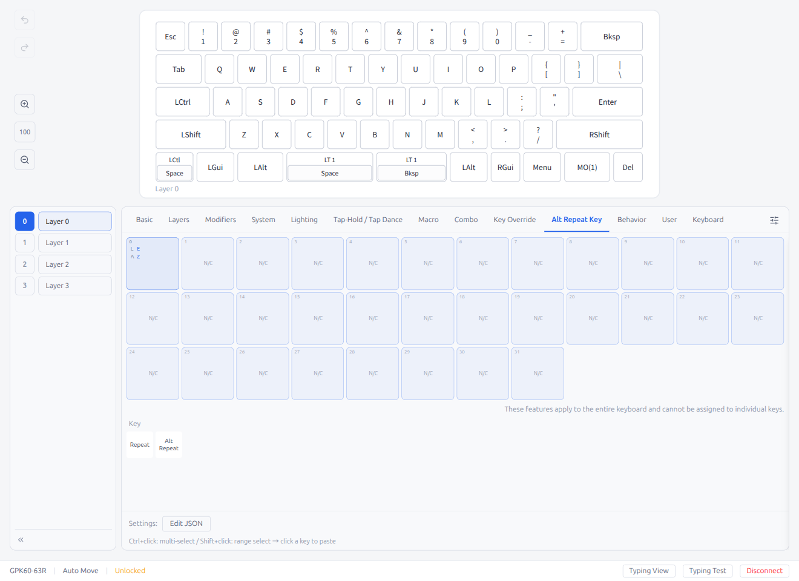
Shows entries as a numbered list. Configured entries display a summary. Click an entry to open the detail editor.
将条目显示为编号列表。已配置的条目显示摘要。点击条目可打开详细编辑器。
Detail Editor 详细编辑器
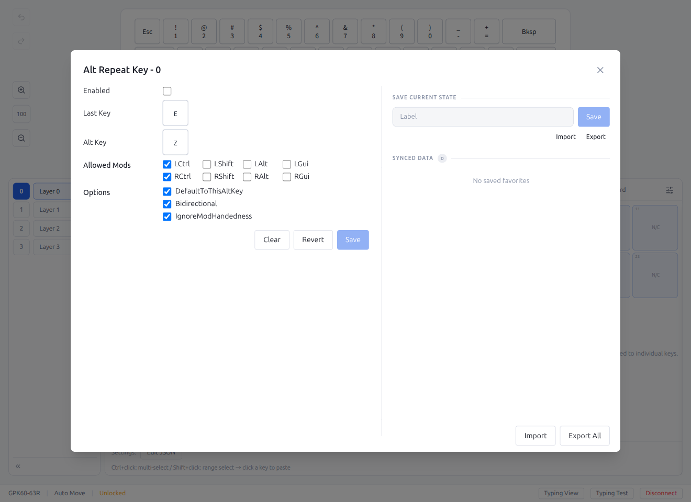
- Left panel: Last Key, Alt Key, enabled toggle, Allowed Mods, Options (DefaultToThisAltKey, Bidirectional, IgnoreModHandedness)
- 左侧面板：上一个键、Alt 键、启用开关、允许的修饰键、选项（默认此 Alt 键、双向、忽略修饰键左右）
- Right panel: Inline favorites panel (Save Current State / Synced Data / Import / Export All)
- 右侧面板：内联收藏夹面板（保存当前状态 / 已同步数据 / 导入 / 全部导出）
- Clear resets all fields; Revert restores the last saved state. Both use two-step confirmation.
- 清除重置所有字段；还原恢复到上次保存的状态。两者都使用两步确认。
- Save writes changes to the keyboard
- 保存将更改写入键盘
5.5 Favorites
5.5 收藏夹
Each editor modal (Tap Dance, Macro, Combo, Key Override, Alt Repeat Key) includes an inline Favorites panel on the right side of the editor.
每个编辑器弹窗（点按跳舞、宏、组合键、按键覆盖、Alt 重复键）在编辑器的右侧都包含一个内联的收藏夹面板。
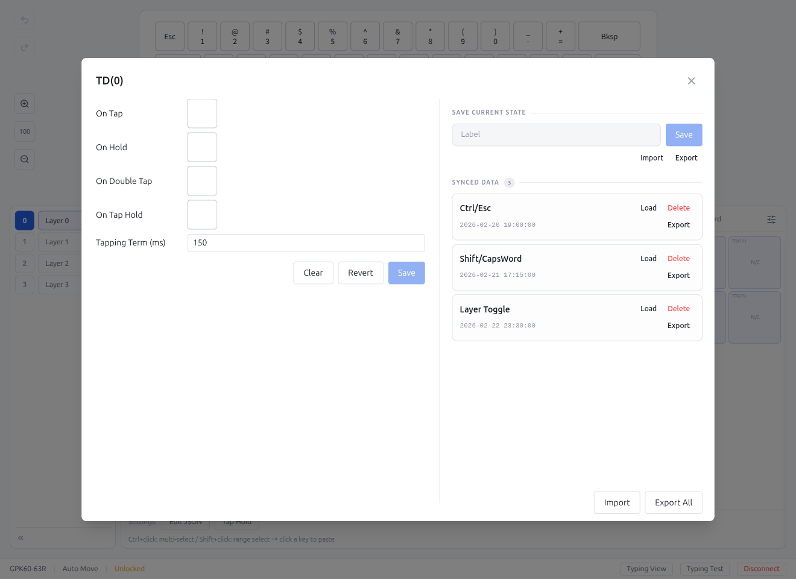
The inline favorites panel provides: 内联收藏夹面板提供：
- Save Current State: Enter a label and click Save to store the current entry configuration
- 保存当前状态：输入标签并点击“保存”以存储当前条目配置
- Import / Export buttons: Import a
.pipette-favfile to apply to the current entry, or export the current entry settings as a.pipette-favfile without saving to the store. Inline "Imported" / "Exported" feedback is shown after each action. - 导入 / 导出按钮：导入
.pipette-fav文件以应用于当前条目，或将当前条目设置导出为.pipette-fav文件而不保存到存储库。每次操作后都会显示“已导入” / “已导出”的内联反馈。
- Import / Export buttons: Import a
- Synced Data: Previously saved entries are listed with Load, Rename, Delete, and Export actions
- 已同步数据：列出以前保存的条目，带有加载、重命名、删除和导出操作
- Import / Export All: Footer buttons for bulk import/export of favorites
- 导入 / 全部导出：用于批量导入/导出收藏夹的底部按钮
Within the Synced Data list: 在“已同步数据”列表中：
- Load: Apply a saved configuration to the current entry
- 加载：将保存的配置应用于当前条目
- Rename: Change the label of a saved entry (also synced to Hub if the entry is uploaded)
- 重命名：更改保存条目的标签（如果条目已上传，也会同步到 Hub）
- Delete: Remove a saved entry
- 删除：移除保存的条目
- Export: Download an individual saved entry as a file
- 导出：将单个保存的条目下载为文件
When Pipette Hub is connected, each saved entry also shows Hub actions:
连接 Pipette Hub 时，每个保存的条目还会显示 Hub 操作：
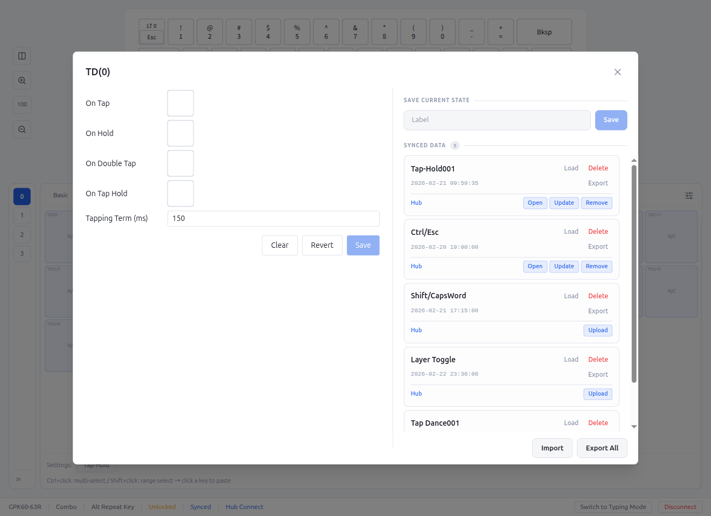
- Upload to Hub: Upload the favorite entry to Pipette Hub as a feature post
- 上传到 Hub：将收藏条目作为功能帖子上传到 Pipette Hub
- Update on Hub: Re-upload the latest configuration to update the existing Hub post
- 在 Hub 上更新：重新上传最新配置以更新现有的 Hub 帖子
- Remove from Hub: Delete the entry from Pipette Hub (two-step confirmation)
- 从 Hub 移除：从 Pipette Hub 中删除条目（两步确认）
- Open in Browser: Open the individual Hub post page in your browser
- 在浏览器中打开：在浏览器中打开单个 Hub 帖子页面
5.6 JSON Editor
5.6 JSON 编辑器
Each feature tab (Tap Dance, Macro, Combo, Key Override, Alt Repeat Key) provides an Edit JSON button at the bottom of the tab. This opens a JSON editor modal for bulk editing all entries as raw JSON text.
每个功能选项卡（点按跳舞、宏、组合键、按键覆盖、Alt 重复键）在底部都提供一个编辑 JSON 按钮。这将打开一个 JSON 编辑器弹窗，用于将所有条目作为原始 JSON 文本进行批量编辑。
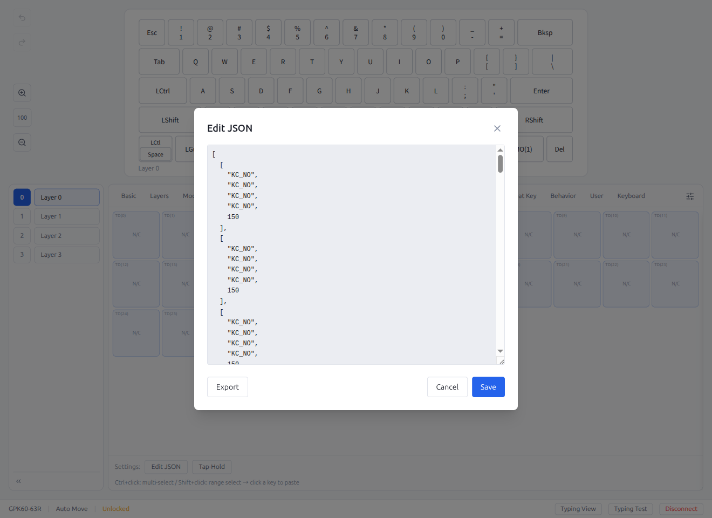
- Text area: Edit all entries as a JSON array. Changes are validated in real time — parse errors are shown below the editor
- 文本区域：将所有条目作为 JSON 数组进行编辑。更改会实时验证 —— 解析错误显示在编辑器下方
- Export (left): Save the current JSON as a
.pipette-favfile for backup or sharing - 导出（左侧）：将当前 JSON 保存为
.pipette-fav文件，以便备份或共享 - Cancel (right): Close without saving
- 取消（右侧）：关闭且不保存
- Save (right): Apply the parsed JSON and write changes to the keyboard
- 保存（右侧）：应用解析后的 JSON 并将更改写入键盘
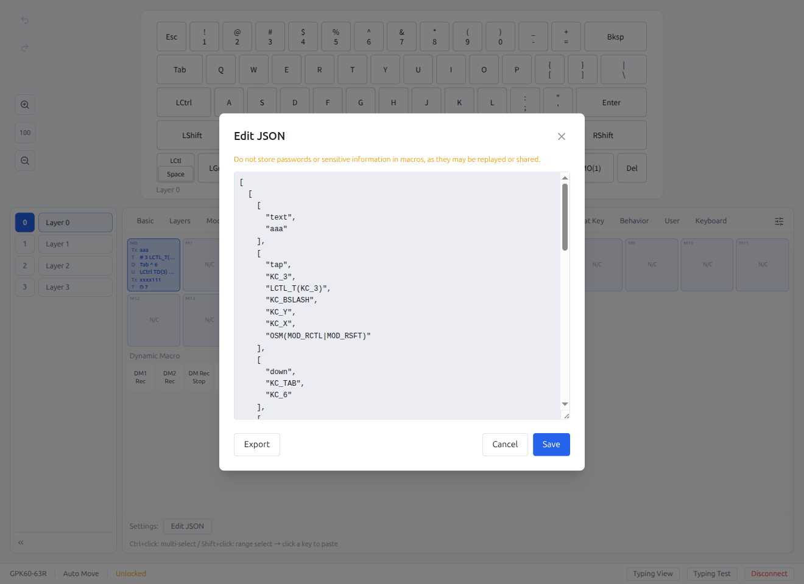
For Macros, a warning is displayed indicating that keyboard unlock is required to save changes.
对于宏，会显示一条警告，指出需要解锁键盘才能保存更改。
Note: The JSON editor modifies all entries at once. Use with caution — invalid JSON will be rejected, but valid JSON with incorrect values may cause unexpected behavior.
注意：JSON 编辑器会一次性修改所有条目。请谨慎使用 —— 无效的 JSON 将被拒绝，但具有错误值的有效 JSON 可能会导致意外行为。
Note: Favorites are not tied to a specific keyboard — saved entries can be loaded on any compatible keyboard. When Cloud Sync is enabled, favorites are also synced across devices (see §6.1). Favorites can also be managed from the Data modal on the device selection screen (see §1.3).
注意：收藏夹不绑定到特定键盘 —— 保存的条目可以加载到任何兼容的键盘上。启用云同步后，收藏夹也会跨设备同步（见 §6.1）。收藏夹也可以通过设备选择屏幕上的“数据”弹窗进行管理（见 §1.3）。
6. Editor Settings Panel
6. 编辑器设置面板
Open the editor settings panel from the save button (floppy disk icon) in the keycode tab bar, or use the Save tab in the Keycodes Overlay Panel (§3.14).
从键码选项卡栏中的保存按钮（软盘图标）打开编辑器设置面板，或使用键码覆盖面板 (§3.14) 中的“保存”选项卡。
The editor settings panel now provides a single Save panel with the following features:
编辑器设置面板现在提供了一个单一的保存面板，具有以下功能：
- Export Current State: Download keymap as
.vil,keymap.c, PDF keymap cheat sheet, or PDF layout export (key outlines with summary pages for Tap Dance, Macro, Combo, Key Override, and Alt Repeat Key entries). An "Exported" inline feedback message appears after a successful export. - 导出当前状态：将键位图下载为
.vil,keymap.c, PDF 键位图速查表或 PDF 布局导出（包含按键轮廓以及点按跳舞、宏、组合键、按键覆盖和 Alt 重复键条目的摘要页）。导出成功后会显示“已导出”的内联反馈消息。 - Save Current State: Save a snapshot of the current keyboard state with a label. Enter a name in the Label field and click Save. If the Label field is left empty, the Save button is disabled. Saved snapshots appear in the Synced Data list below and can be loaded or deleted later
- 保存当前状态：保存当前键盘状态的快照并添加标签。在标签字段中输入名称并点击“保存”。如果标签字段为空，则“保存”按钮将被禁用。保存的快照将显示在下方的“已同步数据”列表中，稍后可以加载或删除
- Synced Data: List of saved snapshots. Click to load, rename, or delete entries
- 已同步数据：已保存快照的列表。点击可加载、重命名或删除条目
- Reset Keyboard Data: Reset keyboard to factory defaults (use with caution)
- 重置键盘数据：将键盘重置为出厂默认设置（请谨慎使用）
Note: Tool settings (keyboard layout, auto advance, key tester, security) have moved to the Keycodes Overlay Panel (§3.14). Zoom is available in the toolbar (§4.1). Layer settings are now managed directly via the layer panel on the left side of the editor.
注意：工具设置（键盘布局、自动前进、按键测试器、安全性）已移动到键码覆盖面板 (§3.14)。缩放功能在工具栏中提供 (§4.1)。层设置现在直接通过编辑器左侧的层面板进行管理。
6.1 Cloud Sync (Google Drive appDataFolder)
6.1 云同步 (Google 云端硬盘 appDataFolder)
Pipette can sync your saved snapshots, favorites, and per-keyboard settings across multiple devices via Google Drive.
Pipette 可以通过 Google 云端硬盘在多个设备之间同步您保存的快照、收藏夹和每个键盘的设置。
Sync is configured in the Settings modal (gear icon on the device selection screen), under the Data tab:
同步是在“设置”弹窗（设备选择屏幕上的齿轮图标）的数据选项卡下配置的：
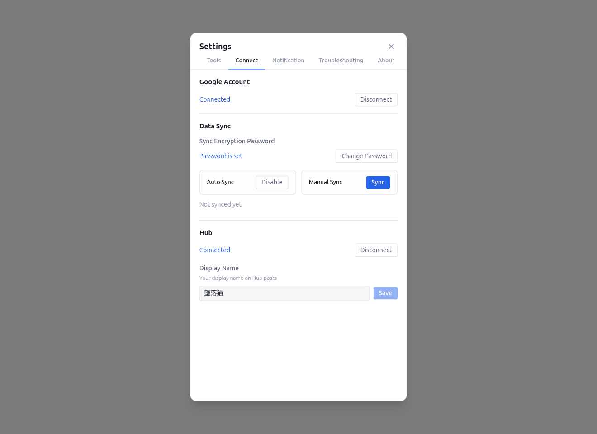
The Data tab contains the following sections: Google Account, Data Sync, and Pipette Hub. Additional troubleshooting and data management options are available in the separate Troubleshooting tab (see below).
“数据”选项卡包含以下部分：Google 帐号、数据同步和 Pipette Hub。其他故障排除和数据管理选项在单独的“故障排除”选项卡中提供（见下文）。
Google Account
Google 帐号
- Click Connect to sign in with your Google account
- 点击连接以登录您的 Google 帐号
- Click Disconnect to sign out. If Pipette Hub is also connected, a warning confirms that Hub will be disconnected as well
- 点击断开连接以注销。如果 Pipette Hub 也已连接，则会有警告确认 Hub 也将被断开连接
Sync Encryption Password
同步加密密码
- Set a password to encrypt all synced data (required). A strength indicator helps you choose a strong password
- 设置密码以加密所有同步数据（必填）。强度指示器可帮助您选择强密码
- If a password already exists on the server (set from another device), a hint is shown asking you to enter the same password
- 如果服务器上已存在密码（由另一台设备设置），则会显示提示要求您输入相同的密码
- Change Password: Click Change Password to re-encrypt all synced files with a new password. No data is deleted — existing files are decrypted and re-encrypted in place
- 更改密码：点击更改密码以使用新密码重新加密所有同步文件。不会删除任何数据 —— 现有文件将被解密并原地重新加密
Sync Controls
同步控制
- Auto Sync: Toggle automatic sync on or off. When enabled, changes sync automatically with a 10-second debounce and periodic 3-minute polling
- 自动同步：切换自动同步的开启或关闭。启用后，更改将以 10 秒的去抖动和每 3 分钟一次的定期轮询自动同步
- Sync: Manually sync favorites and connected keyboard data. Only favorites and the currently connected keyboard are synced (not all keyboards)
- 同步：手动同步收藏夹和已连接的键盘数据。仅同步收藏夹和当前连接的键盘（并非所有键盘）
Sync Status
同步状态
- Displays current sync progress with the sync unit name and an item counter (current / total)
- 显示当前同步进度，包括同步单元名称和项目计数器（当前 / 总计）
- Shows error or partial-sync details if any units failed
- 如果任何单元失败，则显示错误或部分同步的详细信息
Undecryptable Files
无法解密的文件
- Files that cannot be decrypted with the current password or are otherwise unreadable (e.g., encrypted with a forgotten previous password)
- 无法使用当前密码解密或以其他方式无法读取的文件（例如，使用已忘记的旧密码加密的文件）
- Click Scan to detect undecryptable files, select the ones to remove, then click Delete Selected to permanently delete them from Google Drive
- 点击扫描以检测无法解密的文件，选择要删除的文件，然后点击删除所选以从 Google 云端硬盘永久删除它们
Sync Unavailable Alert
同步不可用警报
- Displayed when the sync backend cannot be reached. Click Retry to attempt reconnection
- 当无法连接同步后端时显示。点击重试以尝试重新连接
Data Storage
数据存储
Synced data is stored in Google Drive appDataFolder — a hidden, app-specific folder that only Pipette can access. Your personal Drive files are never touched.
同步数据存储在 Google Drive appDataFolder 中 —— 这是一个隐藏的、特定于应用程序的文件夹，只有 Pipette 可以访问。您的个人云端硬盘文件绝不会被触及。
See the Data Guide for details on what is synced and how your data is protected.
有关同步内容以及如何保护数据的详细信息，请参阅数据指南。
Data Management
数据管理
Troubleshooting and data management functions are available in the Data panel (see §1.3):
故障排除和数据管理功能在数据面板中提供（见 §1.3）：
- Local > Application: Import/export local data or reset selected targets (keyboard data, favorites, app settings)
- 本地 > 应用程序：导入 / 导出本地数据或重置选定目标（键盘数据、收藏夹、应用程序设置）
- Sync: Scan remote data on Google Drive and delete orphaned sync files
- 同步：扫描 Google 云端硬盘上的远程数据并删除孤立的同步文件
Settings — Defaults
设置 — 默认值
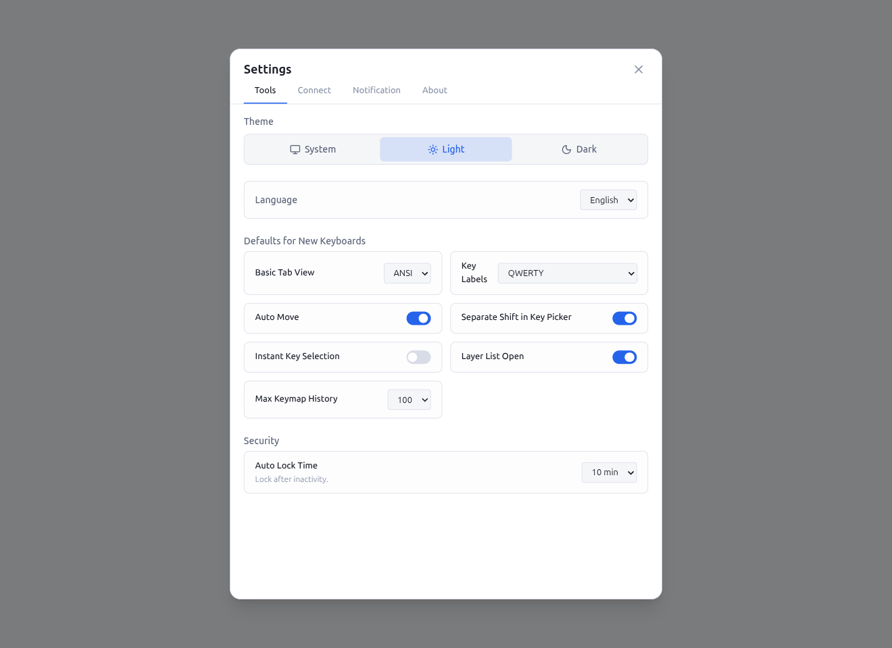
The Tools tab in the Settings modal includes a Defaults section for setting initial preferences for new keyboard connections:
“设置”弹窗中的“工具”选项卡包含一个默认值部分，用于设置新键盘连接的初始首选项：
- Keyboard Layout: Default display layout (QWERTY, Dvorak, etc.)
- 键盘布局：默认显示布局（QWERTY, Dvorak 等）
- Auto Advance: Default auto-advance behavior
- 自动前进：默认自动前进行为
- Instant Key Selection: Default instant key selection behavior (see §2.2)
- 即时按键选择：默认即时按键选择行为（见 §2.2）
- Layer Panel Open: Whether the layer panel starts expanded or collapsed
- 层面板展开：层面板在启动时是展开还是折叠
- Basic View Type: Default view type for the Basic tab (ANSI/ISO/JIS/List)
- 基础视图类型：“基础”选项卡的默认视图类型 (ANSI/ISO/JIS/列表)
- Separate Shift in Key Picker: Default setting for separating Shift in the key picker
- 在按键选择器中分离 Shift：按键选择器中分离 Shift 的默认设置
- Max Keymap History: Maximum number of keymap changes to keep in the current keyboard's edit history (default: 100). History is cleared on disconnect or keyboard switch. See §4.2 for details.
- 最大键位图历史记录：当前键盘编辑历史记录中保留的最大更改次数（默认：100）。断开连接或切换键盘时历史记录会被清除。详见 §4.2。
7. Pipette Hub
7. Pipette Hub
Pipette Hub is a community keymap gallery where you can upload and share your keyboard configurations and favorite entries.
Pipette Hub
是一个社区键位图库，您可以在这里上传并共享您的键盘配置和收藏条目。
7.1 Hub Setup
7.1 Hub 设置
Hub features require Google account authentication. Please complete Google account authentication first. Configure Hub in the Settings modal (gear icon on the device selection screen):
Hub 功能需要 Google 帐号身份验证。请先完成 Google 帐号验证。在“设置”弹窗（设备选择屏幕上的齿轮图标）中配置 Hub：
- In the Data tab, click Connect under the Google Account section to sign in with your Google account
- 在“数据”选项卡中，点击“Google 帐号”部分下的“连接”以登录您的 Google 帐号
- Scroll down to the Pipette Hub section in the same Data tab — it should show Connected
- 在同一“数据”选项卡中向下滚动到“Pipette Hub”部分 —— 它应显示“已连接”
- Set your Display Name — this name is shown on your Hub posts
- 设置您的显示名称 —— 此名称将显示在您的 Hub 帖子中
- Your uploaded keymaps appear in the My Posts list
- 您上传的键位图将显示在“我的帖子”列表中
7.2 Uploading a Keymap
7.2 上传键位图
To upload a keymap to Hub: 要上传键位图到 Hub：
- Connect to your keyboard and open the editor settings (gear icon in the keymap editor)
- 连接键盘并打开编辑器设置（键位编辑器中的齿轮图标）
- Switch to the Data tab
- 切换到数据选项卡
- Save the current state with a label (e.g., "Default")
- 使用标签保存当前状态（例如，“默认”）
- Click the Upload button on the saved snapshot entry
- 点击保存的快照条目上的上传按钮
- After uploading, the entry shows Uploaded status with Open in Browser, Update, and Remove buttons
- 上传后，该条目显示“已上传”状态，并带有“在浏览器中打开”、“更新”和“移除”按钮
- Open in Browser: Opens the Hub page for this keymap
- 在浏览器中打开：打开此键位图的 Hub 页面
- Update: Re-uploads the current keyboard state to update the existing Hub post
- 更新：重新上传当前键盘状态以更新现有的 Hub 帖子
- Remove: Removes the keymap from Hub
- 移除：从 Hub 中移除键位图
Note: Hub uploads include a
.pipettefile alongside the standard export formats, allowing other users to load the full keyboard state directly.
注意：Hub 上传除了标准导出格式外，还包含一个.pipette文件，允许其他用户直接加载完整的键盘状态。
7.3 Uploading Favorite Entries
7.3 上传收藏条目
Individual favorite entries (Tap Dance, Macro, Combo, Key Override, Alt Repeat Key) can also be uploaded to Hub:
单个收藏条目（点按跳舞、宏、组合键、按键覆盖、Alt 重复键）也可以上传到 Hub：
- Open any editor modal with the inline favorites panel, or use the Data modal from the device selection screen
- 打开任何带有内联收藏夹面板的编辑器弹窗，或者使用设备选择屏幕中的“数据”弹窗
- In the favorites list, each entry shows an Upload to Hub button when Hub is connected
- 在收藏夹列表中，当 Hub 连接时，每个条目都会显示一个上传到 Hub 按钮
- Click Upload to Hub to share the configuration
- 点击上传到 Hub 以分享配置
- After uploading, Open in Browser, Update on Hub, and Remove from Hub buttons appear
- 上传后，会出现“在浏览器中打开”、“在 Hub 上更新”和“从 Hub 移除”按钮
- Renaming a favorite that is uploaded to Hub also updates the title on Hub automatically
- 重命名已上传到 Hub 的收藏夹也会自动更新 Hub 上的标题
Note: A Display Name must be set before uploading. If no Display Name is configured, a warning is shown instead of the Upload button.
注意：必须在上传前设置显示名称。如果未配置显示名称，则会显示警告而不是上传按钮。
7.4 Hub Website
7.4 Hub 网站
The Pipette Hub website displays uploaded keymaps in a gallery format.
Pipette Hub 网站 以画廊格式显示上传的键位图。
- Browse uploaded keymaps from the community
- 浏览来自社区的上传键位图
- Search by keyboard name
- 按键盘名称搜索
- Download keymaps as
.vil,.c, or.pdffiles - 下载为
.vil,.c或.pdf文件
Individual Keymap Page
单个键位图页面
Clicking a keymap card opens the detail page with a full keyboard layout visualization.
点击键位图卡片可打开带有完整键盘布局可视化的详情页面。
- View all layers (Layer 0–3) of the uploaded keymap
- 查看上传键位图的所有层（层 0–3）
- Review Tap Dance, Macro, Combo, Alt Repeat Key, and Key Override configurations
- 查看点按跳舞、宏、组合键、Alt 重复键和按键覆盖配置
- Copy URL or Share on X to share with others
- 复制 URL 或 在 X 上分享 给他人
- Download in various formats (
.pdf,.c,.vil) - 下载各种格式 (
.pdf,.c,.vil)
See the Data Guide for details on how Hub authentication works.
有关 Hub 身份验证如何工作的详细信息，请参阅数据指南。
8. Status Bar
8. 状态栏
The status bar at the bottom of the screen shows connection information and action buttons.
屏幕底部的状态栏显示连接信息和操作按钮。
- Device name: Shows the name of the connected keyboard
- 设备名称：显示已连接键盘的名称
- Loaded label: The label of the loaded snapshot (shown only when a snapshot is loaded)
- 已加载标签：已加载快照的标签（仅在加载快照时显示）
- Auto Advance: Status of automatic key advancement after assigning a keycode (shown only when enabled)
- 自动前进：分配键码后自动按键前进的状态（仅在启用时显示）
- Key Tester: Toggle button for Matrix Tester mode (requires matrix tester support; hidden when Typing Test is active)
- 按键测试器：矩阵测试器模式的切换按钮（需要矩阵测试器支持；在打字测试激活时隐藏）
- Typing View: Toggle button to enter view-only mode — a compact window showing only the keyboard layout (see §4.3). Requires matrix tester support; hidden when Typing Test is active
- 打字视图：进入仅查看模式的切换按钮 —— 仅显示键盘布局的紧凑窗口（见 §4.3）。需要矩阵测试器支持；在打字测试激活时隐藏）
- Typing Test: Toggle button for Typing Test mode (requires matrix tester support)
- 打字测试：打字测试模式的切换按钮（需要矩阵测试器支持）
- Locked / Unlocked: Keyboard lock status (prevents accidental changes to dangerous keycodes)
- 已锁定 / 已解锁：键盘锁定状态（防止意外更改危险键码）
- Sync status: Cloud sync status (shown only when sync is configured)
- 同步状态：云同步状态（仅在配置同步时显示）
- Hub connection: Pipette Hub connection status (shown only when Hub is configured)
- Hub 连接：Pipette Hub 连接状态（仅在配置 Hub 时显示）
- Disconnect button: Disconnects from the keyboard and returns to the device selection screen
- 断开连接按钮：断开与键盘的连接并返回设备选择屏幕